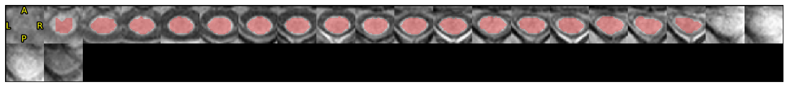
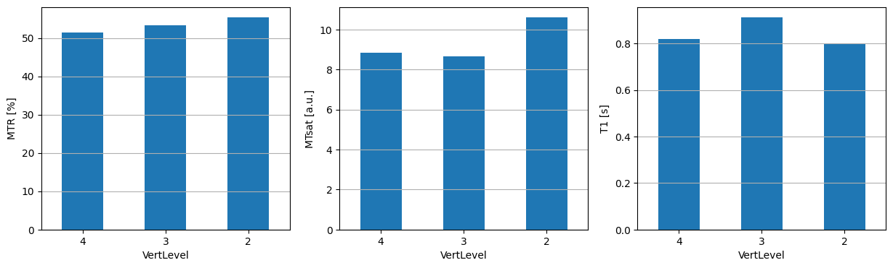

SCT Toolbox#
Author: Steffen Bollmann
Date: 17 Oct 2024
License:
Note: If this notebook uses neuroimaging tools from Neurocontainers, those tools retain their original licenses. Please see Neurodesk citation guidelines for details.
Citation and Resources:#
Tools included in this workflow#
Spinal Cord Toolbox
Valošek, J., & Cohen-Adad, J. (2024). Reproducible spinal cord quantitative MRI analysis with the Spinal Cord Toolbox. Magnetic Resonance in Medical Sciences, 23(3), 307-315. https://doi.org/10.2463/mrms.rev.2023-0159
Workflows this work is based on#
Neurolibre SCT pipeline
Demonstrating the Spinal Cord Toolbox (SCT) use via Neurodesk#
In Neurodesk we can use module to load specific versions of tools. Here we load the spinalcordtoolbox in a specific version:
import module
await module.load('spinalcordtoolbox/5.8')
await module.list()
['spinalcordtoolbox/5.8']
In this interactive notebook we will go through a series of processing steps specific to spinal cord MRI analysis. We first need to import the necessary tools and setup the filenames and folders in the notebook environment.
The rest of this notebook is copied from the neurolibre project with minor path modifications and code adjustments to work with the current version of SCT
%%capture
!pip install numpy pandas
%matplotlib inline
import matplotlib.pyplot as plt
import matplotlib.image as mpimg
import numpy as np
import sys
import os
from os.path import join
from IPython.display import clear_output
base_path = os.getcwd()
# Download example data
!sct_download_data -d sct_example_data -o ./sct_example_data
# Go to MT folder
os.chdir('./sct_example_data/mt/')
--
Spinal Cord Toolbox (5.8)
sct_download_data -d sct_example_data -o ./sct_example_data
--
Removing existing destination folder 'sct_example_data'
Trying URL: https://github.com/spinalcordtoolbox/sct_example_data/releases/download/r20180525/20180525_sct_example_data.zip
Downloading: 20180525_sct_example_data.zip
Status: 0%| | 0.00/44.3M [00:00<?, ?B/s]
Status: 13%|███▊ | 5.55M/44.3M [00:00<00:01, 38.1MB/s]
Status: 24%|███████ | 10.5M/44.3M [00:00<00:01, 23.3MB/s]
Status: 36%|██████████▊ | 16.0M/44.3M [00:00<00:01, 25.0MB/s]
Status: 47%|██████████████▏ | 21.0M/44.3M [00:00<00:01, 22.6MB/s]
Status: 60%|█████████████████▉ | 26.5M/44.3M [00:01<00:00, 24.0MB/s]
Status: 71%|█████████████████████▎ | 31.5M/44.3M [00:01<00:00, 13.5MB/s]
Status: 75%|██████████████████████▌ | 33.4M/44.3M [00:02<00:01, 7.48MB/s]
Status: 78%|███████████████████████▍ | 34.7M/44.3M [00:02<00:01, 7.56MB/s]
Status: 82%|████████████████████████▋ | 36.5M/44.3M [00:02<00:00, 8.14MB/s]
Status: 90%|██████████████████████████▉ | 39.7M/44.3M [00:03<00:00, 11.0MB/s]
Status: 94%|████████████████████████████▏ | 41.6M/44.3M [00:03<00:00, 12.0MB/s]
Status: 100%|██████████████████████████████| 44.3M/44.3M [00:03<00:00, 12.9MB/s]
Creating temporary folder (/tmp/sct-20260409013851.300573-wkiwq92d)
Unzip data to: /tmp/sct-20260409013851.300573-wkiwq92d
Copying data to: sct_example_data
Removing temporary folders...
Done!
# Jupyter Notebook config
verbose = True # False clears cells
# Folder/filename config
parent_dirs = os.path.split(base_path)
mt_folder_relative = os.path.join('sct_example_data/mt')
qc_path = os.path.join(base_path, 'qc')
t1w = 't1w'
mt0 = 'mt0'
mt1 = 'mt1'
label_c3c4 = 'label_c3c4'
warp_template2anat = 'warp_template2anat'
mtr = 'mtr'
mtsat = 'mtsat'
t1map = 't1map'
file_ext = '.nii.gz'
if not verbose:
clear_output()
The first processing step consists in segmenting the spinal cord. This is done automatically using an algorithm called Optic that finds the spinal cord centerline, followed by a second algorithm called DeepSeg-SC that relies on deep learning for segmenting the cord.
# Segment spinal cord
!sct_deepseg_sc -i {t1w+file_ext} -c t1 -qc {qc_path}
if not verbose:
clear_output()
--
Spinal Cord Toolbox (5.8)
sct_deepseg_sc -i t1w.nii.gz -c t1 -qc /home/jovyan/workspace/books/examples/structural_imaging/qc
--
Config deepseg_sc:
Centerline algorithm: svm
Brain in image: True
Kernel dimension: 2d
Contrast: t1
Threshold: 0.15
Creating temporary folder (/tmp/sct-20260409013906.675189-0w39df9o)
Reorient the image to RPI, if necessary...
Finding the spinal cord centerline...
Creating temporary folder (/tmp/sct-20260409013907.678994-anu9bnln)
Remove temporary files...
rm -rf /tmp/sct-20260409013907.678994-anu9bnln
Cropping the image around the spinal cord...
Normalizing the intensity...
Segmenting the spinal cord using deep learning on 2D patches...
Reassembling the image...
Resampling the segmentation to the native image resolution using linear interpolation...
Binarizing the resampled segmentation...
Image header specifies datatype 'float32', but array is of type 'uint8'. Header metadata will be overwritten to use 'uint8'.
Compute shape analysis: 0%| | 0/17 [00:00<?, ?iter/s]
Compute shape analysis: 6%|# | 1/17 [00:00<00:07, 2.01iter/s]
Compute shape analysis: 100%|#################| 17/17 [00:00<00:00, 29.87iter/s]
Remove temporary files...
rm -rf /tmp/sct-20260409013906.675189-0w39df9o
*** Generate Quality Control (QC) html report ***
Resample images to 0.6x0.6 mm
Image header specifies datatype 'uint8', but array is of type 'int64'. Header metadata will be overwritten to use 'int64'.
QcImage: layout with Axial slice
Compute center of mass at each slice
/opt/spinalcordtoolbox-5.8/python/envs/venv_sct/lib/python3.8/site-packages/scipy/ndimage/_measurements.py:1407: RuntimeWarning: invalid value encountered in double_scalars
results = [sum(input * grids[dir].astype(float), labels, index) / normalizer
/home/jovyan/workspace/books/examples/structural_imaging/qc/structural_imaging/sct_example_data/mt/sct_deepseg_sc/2026_04_09_013914.187248/bkg_img.png
cp /opt/spinalcordtoolbox-5.8/spinalcordtoolbox/reports/assets/_assets/css/bootstrap-table.min.css /home/jovyan/workspace/books/examples/structural_imaging/qc/_assets/css
cp /opt/spinalcordtoolbox-5.8/spinalcordtoolbox/reports/assets/_assets/css/bootstrap.min.css /home/jovyan/workspace/books/examples/structural_imaging/qc/_assets/css
cp /opt/spinalcordtoolbox-5.8/spinalcordtoolbox/reports/assets/_assets/css/bootstrap-theme.min.css /home/jovyan/workspace/books/examples/structural_imaging/qc/_assets/css
cp /opt/spinalcordtoolbox-5.8/spinalcordtoolbox/reports/assets/_assets/css/style.css /home/jovyan/workspace/books/examples/structural_imaging/qc/_assets/css
cp /opt/spinalcordtoolbox-5.8/spinalcordtoolbox/reports/assets/_assets/css/select2.min.css /home/jovyan/workspace/books/examples/structural_imaging/qc/_assets/css
cp /opt/spinalcordtoolbox-5.8/spinalcordtoolbox/reports/assets/_assets/css/bootstrap.min.css.map /home/jovyan/workspace/books/examples/structural_imaging/qc/_assets/css
cp /opt/spinalcordtoolbox-5.8/spinalcordtoolbox/reports/assets/_assets/js/yaml.min.js /home/jovyan/workspace/books/examples/structural_imaging/qc/_assets/js
cp /opt/spinalcordtoolbox-5.8/spinalcordtoolbox/reports/assets/_assets/js/bootstrap-table.min.js /home/jovyan/workspace/books/examples/structural_imaging/qc/_assets/js
cp /opt/spinalcordtoolbox-5.8/spinalcordtoolbox/reports/assets/_assets/js/animation.js /home/jovyan/workspace/books/examples/structural_imaging/qc/_assets/js
cp /opt/spinalcordtoolbox-5.8/spinalcordtoolbox/reports/assets/_assets/js/bootstrap.min.js /home/jovyan/workspace/books/examples/structural_imaging/qc/_assets/js
cp /opt/spinalcordtoolbox-5.8/spinalcordtoolbox/reports/assets/_assets/js/select2.min.js /home/jovyan/workspace/books/examples/structural_imaging/qc/_assets/js
cp /opt/spinalcordtoolbox-5.8/spinalcordtoolbox/reports/assets/_assets/js/main.js /home/jovyan/workspace/books/examples/structural_imaging/qc/_assets/js
cp /opt/spinalcordtoolbox-5.8/spinalcordtoolbox/reports/assets/_assets/js/jquery-3.1.0.min.js /home/jovyan/workspace/books/examples/structural_imaging/qc/_assets/js
cp /opt/spinalcordtoolbox-5.8/spinalcordtoolbox/reports/assets/_assets/js/filesaver.min.js /home/jovyan/workspace/books/examples/structural_imaging/qc/_assets/js
cp /opt/spinalcordtoolbox-5.8/spinalcordtoolbox/reports/assets/_assets/imgs/axial.png /home/jovyan/workspace/books/examples/structural_imaging/qc/_assets/imgs
cp /opt/spinalcordtoolbox-5.8/spinalcordtoolbox/reports/assets/_assets/imgs/sct_logo.png /home/jovyan/workspace/books/examples/structural_imaging/qc/_assets/imgs
cp /opt/spinalcordtoolbox-5.8/spinalcordtoolbox/reports/assets/_assets/imgs/f-icon.png /home/jovyan/workspace/books/examples/structural_imaging/qc/_assets/imgs
cp /opt/spinalcordtoolbox-5.8/spinalcordtoolbox/reports/assets/_assets/imgs/keyright.png /home/jovyan/workspace/books/examples/structural_imaging/qc/_assets/imgs
cp /opt/spinalcordtoolbox-5.8/spinalcordtoolbox/reports/assets/_assets/imgs/keydown.png /home/jovyan/workspace/books/examples/structural_imaging/qc/_assets/imgs
cp /opt/spinalcordtoolbox-5.8/spinalcordtoolbox/reports/assets/_assets/imgs/keyup.png /home/jovyan/workspace/books/examples/structural_imaging/qc/_assets/imgs
cp /opt/spinalcordtoolbox-5.8/spinalcordtoolbox/reports/assets/_assets/imgs/sagittal.png /home/jovyan/workspace/books/examples/structural_imaging/qc/_assets/imgs
cp /opt/spinalcordtoolbox-5.8/spinalcordtoolbox/reports/assets/_assets/fonts/glyphicons-halflings-regular.woff2 /home/jovyan/workspace/books/examples/structural_imaging/qc/_assets/fonts
cp /opt/spinalcordtoolbox-5.8/spinalcordtoolbox/reports/assets/_assets/fonts/glyphicons-halflings-regular.eot /home/jovyan/workspace/books/examples/structural_imaging/qc/_assets/fonts
cp /opt/spinalcordtoolbox-5.8/spinalcordtoolbox/reports/assets/_assets/fonts/glyphicons-halflings-regular.svg /home/jovyan/workspace/books/examples/structural_imaging/qc/_assets/fonts
cp /opt/spinalcordtoolbox-5.8/spinalcordtoolbox/reports/assets/_assets/fonts/glyphicons-halflings-regular.woff /home/jovyan/workspace/books/examples/structural_imaging/qc/_assets/fonts
cp /opt/spinalcordtoolbox-5.8/spinalcordtoolbox/reports/assets/_assets/fonts/glyphicons-halflings-regular.ttf /home/jovyan/workspace/books/examples/structural_imaging/qc/_assets/fonts
Successfully generated the QC results in /home/jovyan/workspace/books/examples/structural_imaging/qc/_json/qc_2026_04_09_013914.187248.json
To see the results in a browser, type:
xdg-open /home/jovyan/workspace/books/examples/structural_imaging/qc/index.html
Results of the segmentation appear in Figure 1.
# Plot QC figures
if sys.platform == 'darwin':
# For local testing on OSX
sct_deepseg_sc_qc = 'qc/sct_example_data/mt/sct_deepseg_sc'
else:
# For linux and on-line Binder execution
sct_deepseg_sc_qc = join(qc_path, parent_dirs[-1], mt_folder_relative, 'sct_deepseg_sc')
folders = list(filter(lambda x: os.path.isdir(os.path.join(sct_deepseg_sc_qc, x)), os.listdir(sct_deepseg_sc_qc)))
qc_date = max(folders)
sct_deepseg_sc_qc_dir = join(sct_deepseg_sc_qc, qc_date)
bkg = mpimg.imread(join(sct_deepseg_sc_qc_dir, 'bkg_img.png'))
overlay = mpimg.imread(join(sct_deepseg_sc_qc_dir, 'overlay_img.png'))
plt.figure(figsize = (20,2))
plt.axis('off')
imgplot = plt.imshow(bkg)
imgplot = plt.imshow(overlay,alpha=0.3)

Figure 1. Quality control (QC) SCT module segmentation results. The segmentation (in red) is overlaid on the T1-weighted anatomical scan (in grayscale). Orientation is axial.
Using the generated segmentation, we create a mask around the spinal cord which will be used to crop the image for faster processing and more accurate registration results: the registration algorithm will concentrate on the spinal cord and not on the surrounding tissue (e.g., muscles, neck fat, etc.) which could move independently from the spinal cord and hence produce spurious motion correction results.
# Create mask
!sct_create_mask -i {t1w+file_ext} -p centerline,{t1w+'_seg'+file_ext} -size 35mm -o {t1w+'_mask'+file_ext}
# Crop data for faster processing
!sct_crop_image -i {t1w+file_ext} -m {t1w+'_mask'+file_ext} -o {t1w+'_crop'+file_ext}
if not verbose:
clear_output()
--
Spinal Cord Toolbox (5.8)
sct_create_mask -i t1w.nii.gz -p centerline,t1w_seg.nii.gz -size 35mm -o t1w_mask.nii.gz
--
OK: t1w_seg.nii.gz
Creating temporary folder (/tmp/sct-20260409013927.001192-create_mask-3dryo0vz)
Orientation:
LPI
Dimensions:
(192, 192, 22, 1, 0.8958333, 0.8958333, 5.000001, 1)
Create mask...
/opt/spinalcordtoolbox-5.8/spinalcordtoolbox/scripts/sct_create_mask.py:230: DeprecationWarning: get_header method is deprecated.
Please use the ``img.header`` property instead.
* deprecated from version: 2.1
* Will raise <class 'nibabel.deprecator.ExpiredDeprecationError'> as of version: 4.0
hdr = centerline.get_header() # get header
/opt/spinalcordtoolbox-5.8/spinalcordtoolbox/scripts/sct_create_mask.py:233: DeprecationWarning: get_data() is deprecated in favor of get_fdata(), which has a more predictable return type. To obtain get_data() behavior going forward, use numpy.asanyarray(img.dataobj).
* deprecated from version: 3.0
* Will raise <class 'nibabel.deprecator.ExpiredDeprecationError'> as of version: 5.0
data_centerline = centerline.get_data() # get centerline
/opt/spinalcordtoolbox-5.8/spinalcordtoolbox/scripts/sct_create_mask.py:245: DeprecationWarning: Please use `center_of_mass` from the `scipy.ndimage` namespace, the `scipy.ndimage.measurements` namespace is deprecated.
cx[iz], cy[iz] = ndimage.measurements.center_of_mass(np.array(data_centerline[:, :, iz]))
Image header specifies datatype 'uint8', but array is of type 'int64'. Header metadata will be overwritten to use 'int64'.
Image header specifies datatype 'uint8', but array is of type 'int64'. Header metadata will be overwritten to use 'int64'.
Image header specifies datatype 'uint8', but array is of type 'int64'. Header metadata will be overwritten to use 'int64'.
Image header specifies datatype 'uint8', but array is of type 'int64'. Header metadata will be overwritten to use 'int64'.
Image header specifies datatype 'uint8', but array is of type 'int64'. Header metadata will be overwritten to use 'int64'.
Image header specifies datatype 'uint8', but array is of type 'int64'. Header metadata will be overwritten to use 'int64'.
Image header specifies datatype 'uint8', but array is of type 'int64'. Header metadata will be overwritten to use 'int64'.
Image header specifies datatype 'uint8', but array is of type 'int64'. Header metadata will be overwritten to use 'int64'.
Image header specifies datatype 'uint8', but array is of type 'int64'. Header metadata will be overwritten to use 'int64'.
Image header specifies datatype 'uint8', but array is of type 'int64'. Header metadata will be overwritten to use 'int64'.
Image header specifies datatype 'uint8', but array is of type 'int64'. Header metadata will be overwritten to use 'int64'.
Image header specifies datatype 'uint8', but array is of type 'int64'. Header metadata will be overwritten to use 'int64'.
Image header specifies datatype 'uint8', but array is of type 'int64'. Header metadata will be overwritten to use 'int64'.
Image header specifies datatype 'uint8', but array is of type 'int64'. Header metadata will be overwritten to use 'int64'.
Image header specifies datatype 'uint8', but array is of type 'int64'. Header metadata will be overwritten to use 'int64'.
Image header specifies datatype 'uint8', but array is of type 'int64'. Header metadata will be overwritten to use 'int64'.
Image header specifies datatype 'uint8', but array is of type 'int64'. Header metadata will be overwritten to use 'int64'.
Image header specifies datatype 'uint8', but array is of type 'int64'. Header metadata will be overwritten to use 'int64'.
Image header specifies datatype 'int16', but array is of type 'int64'. Header metadata will be overwritten to use 'int64'.
Remove temporary files...
rm -rf /tmp/sct-20260409013927.001192-create_mask-3dryo0vz
--
Spinal Cord Toolbox (5.8)
sct_crop_image -i t1w.nii.gz -m t1w_mask.nii.gz -o t1w_crop.nii.gz
--
Bounding box: x=[73, 118], y=[69, 112], z=[4, 21]
Cropping the image...
Then, we register the proton density weighted (PD) image to the T1w image, and the MT-weighted image to the T1w image, so we end up with the T1w, MTw and PDw images all aligned together, which is a necessary condition for then computing quantitative MR metrics (here: MTsat).
# Register PD->T1w
# Tips: here we only use rigid transformation because both images have very similar sequence parameters. We don't want to use SyN/BSplineSyN to avoid introducing spurious deformations.
!sct_register_multimodal -i {mt0+file_ext} -d {t1w+'_crop'+file_ext} -param step=1,type=im,algo=rigid,slicewise=1,metric=CC -x spline
# Register MT->T1w
!sct_register_multimodal -i {mt1+file_ext} -d {t1w+'_crop'+file_ext} -param step=1,type=im,algo=rigid,slicewise=1,metric=CC -x spline
if not verbose:
clear_output()
--
Spinal Cord Toolbox (5.8)
sct_register_multimodal -i mt0.nii.gz -d t1w_crop.nii.gz -param step=1,type=im,algo=rigid,slicewise=1,metric=CC -x spline
--
Input parameters:
Source .............. mt0.nii.gz (192, 192, 22)
Destination ......... t1w_crop.nii.gz (45, 43, 17)
Init transfo ........
Mask ................
Output name .........
Remove temp files ... 1
Verbose ............. 1
Check if input data are 3D...
Creating temporary folder (/tmp/sct-20260409013941.900872-register-4ooc0iqf)
Copying input data to tmp folder and convert to nii...
--
ESTIMATE TRANSFORMATION FOR STEP #0
Registration parameters:
type ........... im
algo ........... syn
slicewise ...... 0
metric ......... MI
samplStrategy .. None
samplPercent ... 0.2
iter ........... 0
smooth ......... 0
laplacian ...... 0
shrink ......... 1
gradStep ....... 0.5
deformation .... 1x1x0
init ...........
poly ........... 5
filter_size .... 5
dof ............ Tx_Ty_Tz_Rx_Ry_Rz
smoothWarpXY ... 2
rot_method ..... pca
Estimate transformation
/opt/spinalcordtoolbox-5.8/bin/isct_antsRegistration --dimensionality 3 --transform 'syn[0.5,3,0]' --metric 'MI[dest_RPI.nii,src.nii,1,32]' --convergence 0 --shrink-factors 1 --smoothing-sigmas 0mm --restrict-deformation 1x1x0 --output '[step0,src_regStep0.nii]' --interpolation 'BSpline[3]' --verbose 1 # in /tmp/sct-20260409013941.900872-register-4ooc0iqf
--
ESTIMATE TRANSFORMATION FOR STEP #1
Apply transformation from previous step
/opt/spinalcordtoolbox-5.8/bin/isct_antsApplyTransforms -d 3 -i src.nii -o src_reg.nii -t warp_forward_0.nii.gz -r dest_RPI.nii -n 'BSpline[3]' # in /tmp/sct-20260409013941.900872-register-4ooc0iqf
Registration parameters:
type ........... im
algo ........... rigid
slicewise ...... 1
metric ......... CC
samplStrategy .. None
samplPercent ... 0.2
iter ........... 10
smooth ......... 0
laplacian ...... 0
shrink ......... 1
gradStep ....... 0.5
deformation .... 1x1x0
init ...........
poly ........... 5
filter_size .... 5
dof ............ Tx_Ty_Tz_Rx_Ry_Rz
smoothWarpXY ... 2
rot_method ..... pca
Creating temporary folder (/tmp/sct-20260409013943.689160-register-e7f3g01r)
Copy input data to temp folder...
Get image dimensions of destination image...
matrix size: 45 x 43 x 17
voxel size: 0.8958333mm x 0.8958333mm x 17mm
Split input volume...
Split destination volume...
Registering slice 0/16...
/opt/spinalcordtoolbox-5.8/bin/isct_antsRegistration --dimensionality 2 --transform 'Rigid[0.5]' --metric 'CC[dest_Z0000.nii,src_Z0000.nii,1,4]' --convergence 10 --shrink-factors 1 --smoothing-sigmas 0mm --output '[warp2d_0000,src_Z0000_reg.nii]' --interpolation 'BSpline[3]' --verbose 1 # in /tmp/sct-20260409013943.689160-register-e7f3g01r
/opt/spinalcordtoolbox-5.8/bin/isct_antsRegistration -d 2 -t 'SyN[1,1,1]' -c 0 -m 'MI[dest_Z0000.nii,src_Z0000.nii,1,32]' -o warp2d_null -f 1 -s 0 # in /tmp/sct-20260409013943.689160-register-e7f3g01r
/opt/spinalcordtoolbox-5.8/bin/isct_ComposeMultiTransform 2 warp2d_00000Warp.nii.gz -R dest_Z0000.nii warp2d_null0Warp.nii.gz warp2d_00000GenericAffine.mat # in /tmp/sct-20260409013943.689160-register-e7f3g01r
/opt/spinalcordtoolbox-5.8/bin/isct_ComposeMultiTransform 2 warp2d_00000InverseWarp.nii.gz -R src_Z0000.nii warp2d_null0InverseWarp.nii.gz -i warp2d_00000GenericAffine.mat # in /tmp/sct-20260409013943.689160-register-e7f3g01r
Registering slice 1/16...
/opt/spinalcordtoolbox-5.8/bin/isct_antsRegistration --dimensionality 2 --transform 'Rigid[0.5]' --metric 'CC[dest_Z0001.nii,src_Z0001.nii,1,4]' --convergence 10 --shrink-factors 1 --smoothing-sigmas 0mm --output '[warp2d_0001,src_Z0001_reg.nii]' --interpolation 'BSpline[3]' --verbose 1 # in /tmp/sct-20260409013943.689160-register-e7f3g01r
/opt/spinalcordtoolbox-5.8/bin/isct_antsRegistration -d 2 -t 'SyN[1,1,1]' -c 0 -m 'MI[dest_Z0001.nii,src_Z0001.nii,1,32]' -o warp2d_null -f 1 -s 0 # in /tmp/sct-20260409013943.689160-register-e7f3g01r
/opt/spinalcordtoolbox-5.8/bin/isct_ComposeMultiTransform 2 warp2d_00010Warp.nii.gz -R dest_Z0001.nii warp2d_null0Warp.nii.gz warp2d_00010GenericAffine.mat # in /tmp/sct-20260409013943.689160-register-e7f3g01r
/opt/spinalcordtoolbox-5.8/bin/isct_ComposeMultiTransform 2 warp2d_00010InverseWarp.nii.gz -R src_Z0001.nii warp2d_null0InverseWarp.nii.gz -i warp2d_00010GenericAffine.mat # in /tmp/sct-20260409013943.689160-register-e7f3g01r
Registering slice 2/16...
/opt/spinalcordtoolbox-5.8/bin/isct_antsRegistration --dimensionality 2 --transform 'Rigid[0.5]' --metric 'CC[dest_Z0002.nii,src_Z0002.nii,1,4]' --convergence 10 --shrink-factors 1 --smoothing-sigmas 0mm --output '[warp2d_0002,src_Z0002_reg.nii]' --interpolation 'BSpline[3]' --verbose 1 # in /tmp/sct-20260409013943.689160-register-e7f3g01r
/opt/spinalcordtoolbox-5.8/bin/isct_antsRegistration -d 2 -t 'SyN[1,1,1]' -c 0 -m 'MI[dest_Z0002.nii,src_Z0002.nii,1,32]' -o warp2d_null -f 1 -s 0 # in /tmp/sct-20260409013943.689160-register-e7f3g01r
/opt/spinalcordtoolbox-5.8/bin/isct_ComposeMultiTransform 2 warp2d_00020Warp.nii.gz -R dest_Z0002.nii warp2d_null0Warp.nii.gz warp2d_00020GenericAffine.mat # in /tmp/sct-20260409013943.689160-register-e7f3g01r
/opt/spinalcordtoolbox-5.8/bin/isct_ComposeMultiTransform 2 warp2d_00020InverseWarp.nii.gz -R src_Z0002.nii warp2d_null0InverseWarp.nii.gz -i warp2d_00020GenericAffine.mat # in /tmp/sct-20260409013943.689160-register-e7f3g01r
Registering slice 3/16...
/opt/spinalcordtoolbox-5.8/bin/isct_antsRegistration --dimensionality 2 --transform 'Rigid[0.5]' --metric 'CC[dest_Z0003.nii,src_Z0003.nii,1,4]' --convergence 10 --shrink-factors 1 --smoothing-sigmas 0mm --output '[warp2d_0003,src_Z0003_reg.nii]' --interpolation 'BSpline[3]' --verbose 1 # in /tmp/sct-20260409013943.689160-register-e7f3g01r
/opt/spinalcordtoolbox-5.8/bin/isct_antsRegistration -d 2 -t 'SyN[1,1,1]' -c 0 -m 'MI[dest_Z0003.nii,src_Z0003.nii,1,32]' -o warp2d_null -f 1 -s 0 # in /tmp/sct-20260409013943.689160-register-e7f3g01r
/opt/spinalcordtoolbox-5.8/bin/isct_ComposeMultiTransform 2 warp2d_00030Warp.nii.gz -R dest_Z0003.nii warp2d_null0Warp.nii.gz warp2d_00030GenericAffine.mat # in /tmp/sct-20260409013943.689160-register-e7f3g01r
/opt/spinalcordtoolbox-5.8/bin/isct_ComposeMultiTransform 2 warp2d_00030InverseWarp.nii.gz -R src_Z0003.nii warp2d_null0InverseWarp.nii.gz -i warp2d_00030GenericAffine.mat # in /tmp/sct-20260409013943.689160-register-e7f3g01r
Registering slice 4/16...
/opt/spinalcordtoolbox-5.8/bin/isct_antsRegistration --dimensionality 2 --transform 'Rigid[0.5]' --metric 'CC[dest_Z0004.nii,src_Z0004.nii,1,4]' --convergence 10 --shrink-factors 1 --smoothing-sigmas 0mm --output '[warp2d_0004,src_Z0004_reg.nii]' --interpolation 'BSpline[3]' --verbose 1 # in /tmp/sct-20260409013943.689160-register-e7f3g01r
/opt/spinalcordtoolbox-5.8/bin/isct_antsRegistration -d 2 -t 'SyN[1,1,1]' -c 0 -m 'MI[dest_Z0004.nii,src_Z0004.nii,1,32]' -o warp2d_null -f 1 -s 0 # in /tmp/sct-20260409013943.689160-register-e7f3g01r
/opt/spinalcordtoolbox-5.8/bin/isct_ComposeMultiTransform 2 warp2d_00040Warp.nii.gz -R dest_Z0004.nii warp2d_null0Warp.nii.gz warp2d_00040GenericAffine.mat # in /tmp/sct-20260409013943.689160-register-e7f3g01r
/opt/spinalcordtoolbox-5.8/bin/isct_ComposeMultiTransform 2 warp2d_00040InverseWarp.nii.gz -R src_Z0004.nii warp2d_null0InverseWarp.nii.gz -i warp2d_00040GenericAffine.mat # in /tmp/sct-20260409013943.689160-register-e7f3g01r
Registering slice 5/16...
/opt/spinalcordtoolbox-5.8/bin/isct_antsRegistration --dimensionality 2 --transform 'Rigid[0.5]' --metric 'CC[dest_Z0005.nii,src_Z0005.nii,1,4]' --convergence 10 --shrink-factors 1 --smoothing-sigmas 0mm --output '[warp2d_0005,src_Z0005_reg.nii]' --interpolation 'BSpline[3]' --verbose 1 # in /tmp/sct-20260409013943.689160-register-e7f3g01r
/opt/spinalcordtoolbox-5.8/bin/isct_antsRegistration -d 2 -t 'SyN[1,1,1]' -c 0 -m 'MI[dest_Z0005.nii,src_Z0005.nii,1,32]' -o warp2d_null -f 1 -s 0 # in /tmp/sct-20260409013943.689160-register-e7f3g01r
/opt/spinalcordtoolbox-5.8/bin/isct_ComposeMultiTransform 2 warp2d_00050Warp.nii.gz -R dest_Z0005.nii warp2d_null0Warp.nii.gz warp2d_00050GenericAffine.mat # in /tmp/sct-20260409013943.689160-register-e7f3g01r
/opt/spinalcordtoolbox-5.8/bin/isct_ComposeMultiTransform 2 warp2d_00050InverseWarp.nii.gz -R src_Z0005.nii warp2d_null0InverseWarp.nii.gz -i warp2d_00050GenericAffine.mat # in /tmp/sct-20260409013943.689160-register-e7f3g01r
Registering slice 6/16...
/opt/spinalcordtoolbox-5.8/bin/isct_antsRegistration --dimensionality 2 --transform 'Rigid[0.5]' --metric 'CC[dest_Z0006.nii,src_Z0006.nii,1,4]' --convergence 10 --shrink-factors 1 --smoothing-sigmas 0mm --output '[warp2d_0006,src_Z0006_reg.nii]' --interpolation 'BSpline[3]' --verbose 1 # in /tmp/sct-20260409013943.689160-register-e7f3g01r
/opt/spinalcordtoolbox-5.8/bin/isct_antsRegistration -d 2 -t 'SyN[1,1,1]' -c 0 -m 'MI[dest_Z0006.nii,src_Z0006.nii,1,32]' -o warp2d_null -f 1 -s 0 # in /tmp/sct-20260409013943.689160-register-e7f3g01r
/opt/spinalcordtoolbox-5.8/bin/isct_ComposeMultiTransform 2 warp2d_00060Warp.nii.gz -R dest_Z0006.nii warp2d_null0Warp.nii.gz warp2d_00060GenericAffine.mat # in /tmp/sct-20260409013943.689160-register-e7f3g01r
/opt/spinalcordtoolbox-5.8/bin/isct_ComposeMultiTransform 2 warp2d_00060InverseWarp.nii.gz -R src_Z0006.nii warp2d_null0InverseWarp.nii.gz -i warp2d_00060GenericAffine.mat # in /tmp/sct-20260409013943.689160-register-e7f3g01r
Registering slice 7/16...
/opt/spinalcordtoolbox-5.8/bin/isct_antsRegistration --dimensionality 2 --transform 'Rigid[0.5]' --metric 'CC[dest_Z0007.nii,src_Z0007.nii,1,4]' --convergence 10 --shrink-factors 1 --smoothing-sigmas 0mm --output '[warp2d_0007,src_Z0007_reg.nii]' --interpolation 'BSpline[3]' --verbose 1 # in /tmp/sct-20260409013943.689160-register-e7f3g01r
/opt/spinalcordtoolbox-5.8/bin/isct_antsRegistration -d 2 -t 'SyN[1,1,1]' -c 0 -m 'MI[dest_Z0007.nii,src_Z0007.nii,1,32]' -o warp2d_null -f 1 -s 0 # in /tmp/sct-20260409013943.689160-register-e7f3g01r
/opt/spinalcordtoolbox-5.8/bin/isct_ComposeMultiTransform 2 warp2d_00070Warp.nii.gz -R dest_Z0007.nii warp2d_null0Warp.nii.gz warp2d_00070GenericAffine.mat # in /tmp/sct-20260409013943.689160-register-e7f3g01r
/opt/spinalcordtoolbox-5.8/bin/isct_ComposeMultiTransform 2 warp2d_00070InverseWarp.nii.gz -R src_Z0007.nii warp2d_null0InverseWarp.nii.gz -i warp2d_00070GenericAffine.mat # in /tmp/sct-20260409013943.689160-register-e7f3g01r
Registering slice 8/16...
/opt/spinalcordtoolbox-5.8/bin/isct_antsRegistration --dimensionality 2 --transform 'Rigid[0.5]' --metric 'CC[dest_Z0008.nii,src_Z0008.nii,1,4]' --convergence 10 --shrink-factors 1 --smoothing-sigmas 0mm --output '[warp2d_0008,src_Z0008_reg.nii]' --interpolation 'BSpline[3]' --verbose 1 # in /tmp/sct-20260409013943.689160-register-e7f3g01r
/opt/spinalcordtoolbox-5.8/bin/isct_antsRegistration -d 2 -t 'SyN[1,1,1]' -c 0 -m 'MI[dest_Z0008.nii,src_Z0008.nii,1,32]' -o warp2d_null -f 1 -s 0 # in /tmp/sct-20260409013943.689160-register-e7f3g01r
/opt/spinalcordtoolbox-5.8/bin/isct_ComposeMultiTransform 2 warp2d_00080Warp.nii.gz -R dest_Z0008.nii warp2d_null0Warp.nii.gz warp2d_00080GenericAffine.mat # in /tmp/sct-20260409013943.689160-register-e7f3g01r
/opt/spinalcordtoolbox-5.8/bin/isct_ComposeMultiTransform 2 warp2d_00080InverseWarp.nii.gz -R src_Z0008.nii warp2d_null0InverseWarp.nii.gz -i warp2d_00080GenericAffine.mat # in /tmp/sct-20260409013943.689160-register-e7f3g01r
Registering slice 9/16...
/opt/spinalcordtoolbox-5.8/bin/isct_antsRegistration --dimensionality 2 --transform 'Rigid[0.5]' --metric 'CC[dest_Z0009.nii,src_Z0009.nii,1,4]' --convergence 10 --shrink-factors 1 --smoothing-sigmas 0mm --output '[warp2d_0009,src_Z0009_reg.nii]' --interpolation 'BSpline[3]' --verbose 1 # in /tmp/sct-20260409013943.689160-register-e7f3g01r
/opt/spinalcordtoolbox-5.8/bin/isct_antsRegistration -d 2 -t 'SyN[1,1,1]' -c 0 -m 'MI[dest_Z0009.nii,src_Z0009.nii,1,32]' -o warp2d_null -f 1 -s 0 # in /tmp/sct-20260409013943.689160-register-e7f3g01r
/opt/spinalcordtoolbox-5.8/bin/isct_ComposeMultiTransform 2 warp2d_00090Warp.nii.gz -R dest_Z0009.nii warp2d_null0Warp.nii.gz warp2d_00090GenericAffine.mat # in /tmp/sct-20260409013943.689160-register-e7f3g01r
/opt/spinalcordtoolbox-5.8/bin/isct_ComposeMultiTransform 2 warp2d_00090InverseWarp.nii.gz -R src_Z0009.nii warp2d_null0InverseWarp.nii.gz -i warp2d_00090GenericAffine.mat # in /tmp/sct-20260409013943.689160-register-e7f3g01r
Registering slice 10/16...
/opt/spinalcordtoolbox-5.8/bin/isct_antsRegistration --dimensionality 2 --transform 'Rigid[0.5]' --metric 'CC[dest_Z0010.nii,src_Z0010.nii,1,4]' --convergence 10 --shrink-factors 1 --smoothing-sigmas 0mm --output '[warp2d_0010,src_Z0010_reg.nii]' --interpolation 'BSpline[3]' --verbose 1 # in /tmp/sct-20260409013943.689160-register-e7f3g01r
/opt/spinalcordtoolbox-5.8/bin/isct_antsRegistration -d 2 -t 'SyN[1,1,1]' -c 0 -m 'MI[dest_Z0010.nii,src_Z0010.nii,1,32]' -o warp2d_null -f 1 -s 0 # in /tmp/sct-20260409013943.689160-register-e7f3g01r
/opt/spinalcordtoolbox-5.8/bin/isct_ComposeMultiTransform 2 warp2d_00100Warp.nii.gz -R dest_Z0010.nii warp2d_null0Warp.nii.gz warp2d_00100GenericAffine.mat # in /tmp/sct-20260409013943.689160-register-e7f3g01r
/opt/spinalcordtoolbox-5.8/bin/isct_ComposeMultiTransform 2 warp2d_00100InverseWarp.nii.gz -R src_Z0010.nii warp2d_null0InverseWarp.nii.gz -i warp2d_00100GenericAffine.mat # in /tmp/sct-20260409013943.689160-register-e7f3g01r
Registering slice 11/16...
/opt/spinalcordtoolbox-5.8/bin/isct_antsRegistration --dimensionality 2 --transform 'Rigid[0.5]' --metric 'CC[dest_Z0011.nii,src_Z0011.nii,1,4]' --convergence 10 --shrink-factors 1 --smoothing-sigmas 0mm --output '[warp2d_0011,src_Z0011_reg.nii]' --interpolation 'BSpline[3]' --verbose 1 # in /tmp/sct-20260409013943.689160-register-e7f3g01r
/opt/spinalcordtoolbox-5.8/bin/isct_antsRegistration -d 2 -t 'SyN[1,1,1]' -c 0 -m 'MI[dest_Z0011.nii,src_Z0011.nii,1,32]' -o warp2d_null -f 1 -s 0 # in /tmp/sct-20260409013943.689160-register-e7f3g01r
/opt/spinalcordtoolbox-5.8/bin/isct_ComposeMultiTransform 2 warp2d_00110Warp.nii.gz -R dest_Z0011.nii warp2d_null0Warp.nii.gz warp2d_00110GenericAffine.mat # in /tmp/sct-20260409013943.689160-register-e7f3g01r
/opt/spinalcordtoolbox-5.8/bin/isct_ComposeMultiTransform 2 warp2d_00110InverseWarp.nii.gz -R src_Z0011.nii warp2d_null0InverseWarp.nii.gz -i warp2d_00110GenericAffine.mat # in /tmp/sct-20260409013943.689160-register-e7f3g01r
Registering slice 12/16...
/opt/spinalcordtoolbox-5.8/bin/isct_antsRegistration --dimensionality 2 --transform 'Rigid[0.5]' --metric 'CC[dest_Z0012.nii,src_Z0012.nii,1,4]' --convergence 10 --shrink-factors 1 --smoothing-sigmas 0mm --output '[warp2d_0012,src_Z0012_reg.nii]' --interpolation 'BSpline[3]' --verbose 1 # in /tmp/sct-20260409013943.689160-register-e7f3g01r
/opt/spinalcordtoolbox-5.8/bin/isct_antsRegistration -d 2 -t 'SyN[1,1,1]' -c 0 -m 'MI[dest_Z0012.nii,src_Z0012.nii,1,32]' -o warp2d_null -f 1 -s 0 # in /tmp/sct-20260409013943.689160-register-e7f3g01r
/opt/spinalcordtoolbox-5.8/bin/isct_ComposeMultiTransform 2 warp2d_00120Warp.nii.gz -R dest_Z0012.nii warp2d_null0Warp.nii.gz warp2d_00120GenericAffine.mat # in /tmp/sct-20260409013943.689160-register-e7f3g01r
/opt/spinalcordtoolbox-5.8/bin/isct_ComposeMultiTransform 2 warp2d_00120InverseWarp.nii.gz -R src_Z0012.nii warp2d_null0InverseWarp.nii.gz -i warp2d_00120GenericAffine.mat # in /tmp/sct-20260409013943.689160-register-e7f3g01r
Registering slice 13/16...
/opt/spinalcordtoolbox-5.8/bin/isct_antsRegistration --dimensionality 2 --transform 'Rigid[0.5]' --metric 'CC[dest_Z0013.nii,src_Z0013.nii,1,4]' --convergence 10 --shrink-factors 1 --smoothing-sigmas 0mm --output '[warp2d_0013,src_Z0013_reg.nii]' --interpolation 'BSpline[3]' --verbose 1 # in /tmp/sct-20260409013943.689160-register-e7f3g01r
/opt/spinalcordtoolbox-5.8/bin/isct_antsRegistration -d 2 -t 'SyN[1,1,1]' -c 0 -m 'MI[dest_Z0013.nii,src_Z0013.nii,1,32]' -o warp2d_null -f 1 -s 0 # in /tmp/sct-20260409013943.689160-register-e7f3g01r
/opt/spinalcordtoolbox-5.8/bin/isct_ComposeMultiTransform 2 warp2d_00130Warp.nii.gz -R dest_Z0013.nii warp2d_null0Warp.nii.gz warp2d_00130GenericAffine.mat # in /tmp/sct-20260409013943.689160-register-e7f3g01r
/opt/spinalcordtoolbox-5.8/bin/isct_ComposeMultiTransform 2 warp2d_00130InverseWarp.nii.gz -R src_Z0013.nii warp2d_null0InverseWarp.nii.gz -i warp2d_00130GenericAffine.mat # in /tmp/sct-20260409013943.689160-register-e7f3g01r
Registering slice 14/16...
/opt/spinalcordtoolbox-5.8/bin/isct_antsRegistration --dimensionality 2 --transform 'Rigid[0.5]' --metric 'CC[dest_Z0014.nii,src_Z0014.nii,1,4]' --convergence 10 --shrink-factors 1 --smoothing-sigmas 0mm --output '[warp2d_0014,src_Z0014_reg.nii]' --interpolation 'BSpline[3]' --verbose 1 # in /tmp/sct-20260409013943.689160-register-e7f3g01r
/opt/spinalcordtoolbox-5.8/bin/isct_antsRegistration -d 2 -t 'SyN[1,1,1]' -c 0 -m 'MI[dest_Z0014.nii,src_Z0014.nii,1,32]' -o warp2d_null -f 1 -s 0 # in /tmp/sct-20260409013943.689160-register-e7f3g01r
/opt/spinalcordtoolbox-5.8/bin/isct_ComposeMultiTransform 2 warp2d_00140Warp.nii.gz -R dest_Z0014.nii warp2d_null0Warp.nii.gz warp2d_00140GenericAffine.mat # in /tmp/sct-20260409013943.689160-register-e7f3g01r
/opt/spinalcordtoolbox-5.8/bin/isct_ComposeMultiTransform 2 warp2d_00140InverseWarp.nii.gz -R src_Z0014.nii warp2d_null0InverseWarp.nii.gz -i warp2d_00140GenericAffine.mat # in /tmp/sct-20260409013943.689160-register-e7f3g01r
Registering slice 15/16...
/opt/spinalcordtoolbox-5.8/bin/isct_antsRegistration --dimensionality 2 --transform 'Rigid[0.5]' --metric 'CC[dest_Z0015.nii,src_Z0015.nii,1,4]' --convergence 10 --shrink-factors 1 --smoothing-sigmas 0mm --output '[warp2d_0015,src_Z0015_reg.nii]' --interpolation 'BSpline[3]' --verbose 1 # in /tmp/sct-20260409013943.689160-register-e7f3g01r
/opt/spinalcordtoolbox-5.8/bin/isct_antsRegistration -d 2 -t 'SyN[1,1,1]' -c 0 -m 'MI[dest_Z0015.nii,src_Z0015.nii,1,32]' -o warp2d_null -f 1 -s 0 # in /tmp/sct-20260409013943.689160-register-e7f3g01r
/opt/spinalcordtoolbox-5.8/bin/isct_ComposeMultiTransform 2 warp2d_00150Warp.nii.gz -R dest_Z0015.nii warp2d_null0Warp.nii.gz warp2d_00150GenericAffine.mat # in /tmp/sct-20260409013943.689160-register-e7f3g01r
/opt/spinalcordtoolbox-5.8/bin/isct_ComposeMultiTransform 2 warp2d_00150InverseWarp.nii.gz -R src_Z0015.nii warp2d_null0InverseWarp.nii.gz -i warp2d_00150GenericAffine.mat # in /tmp/sct-20260409013943.689160-register-e7f3g01r
Registering slice 16/16...
/opt/spinalcordtoolbox-5.8/bin/isct_antsRegistration --dimensionality 2 --transform 'Rigid[0.5]' --metric 'CC[dest_Z0016.nii,src_Z0016.nii,1,4]' --convergence 10 --shrink-factors 1 --smoothing-sigmas 0mm --output '[warp2d_0016,src_Z0016_reg.nii]' --interpolation 'BSpline[3]' --verbose 1 # in /tmp/sct-20260409013943.689160-register-e7f3g01r
/opt/spinalcordtoolbox-5.8/bin/isct_antsRegistration -d 2 -t 'SyN[1,1,1]' -c 0 -m 'MI[dest_Z0016.nii,src_Z0016.nii,1,32]' -o warp2d_null -f 1 -s 0 # in /tmp/sct-20260409013943.689160-register-e7f3g01r
/opt/spinalcordtoolbox-5.8/bin/isct_ComposeMultiTransform 2 warp2d_00160Warp.nii.gz -R dest_Z0016.nii warp2d_null0Warp.nii.gz warp2d_00160GenericAffine.mat # in /tmp/sct-20260409013943.689160-register-e7f3g01r
/opt/spinalcordtoolbox-5.8/bin/isct_ComposeMultiTransform 2 warp2d_00160InverseWarp.nii.gz -R src_Z0016.nii warp2d_null0InverseWarp.nii.gz -i warp2d_00160GenericAffine.mat # in /tmp/sct-20260409013943.689160-register-e7f3g01r
Merge warping fields along z...
Move warping fields...
cp step1Warp.nii.gz /tmp/sct-20260409013941.900872-register-4ooc0iqf
cp step1InverseWarp.nii.gz /tmp/sct-20260409013941.900872-register-4ooc0iqf
rm -rf /tmp/sct-20260409013943.689160-register-e7f3g01r
Concatenate transformations...
/opt/spinalcordtoolbox-5.8/bin/isct_ComposeMultiTransform 3 warp_src2dest.nii.gz -R dest.nii warp_forward_1.nii.gz warp_forward_0.nii.gz # in /tmp/sct-20260409013941.900872-register-4ooc0iqf
/opt/spinalcordtoolbox-5.8/bin/isct_ComposeMultiTransform 3 warp_dest2src.nii.gz -R src.nii warp_inverse_0.nii.gz warp_inverse_1.nii.gz # in /tmp/sct-20260409013941.900872-register-4ooc0iqf
Apply transfo source --> dest...
/opt/spinalcordtoolbox-5.8/bin/isct_antsApplyTransforms -d 3 -i src.nii -o src_reg.nii -t warp_src2dest.nii.gz -r dest.nii -n 'BSpline[3]' # in /tmp/sct-20260409013941.900872-register-4ooc0iqf
Apply transfo dest --> source...
/opt/spinalcordtoolbox-5.8/bin/isct_antsApplyTransforms -d 3 -i dest.nii -o dest_reg.nii -t warp_dest2src.nii.gz -r src.nii -n 'BSpline[3]' # in /tmp/sct-20260409013941.900872-register-4ooc0iqf
Generate output files...
File created: mt0_reg.nii.gz
mv /tmp/sct-20260409013941.900872-register-4ooc0iqf/warp_src2dest.nii.gz warp_mt02t1w_crop.nii.gz
File created: warp_mt02t1w_crop.nii.gz
File created: t1w_crop_reg.nii.gz
mv /tmp/sct-20260409013941.900872-register-4ooc0iqf/warp_dest2src.nii.gz warp_t1w_crop2mt0.nii.gz
File created: warp_t1w_crop2mt0.nii.gz
Remove temporary files...
rm -rf /tmp/sct-20260409013941.900872-register-4ooc0iqf
Finished! Elapsed time: 18s
--
Spinal Cord Toolbox (5.8)
sct_register_multimodal -i mt1.nii.gz -d t1w_crop.nii.gz -param step=1,type=im,algo=rigid,slicewise=1,metric=CC -x spline
--
Input parameters:
Source .............. mt1.nii.gz (192, 192, 22)
Destination ......... t1w_crop.nii.gz (45, 43, 17)
Init transfo ........
Mask ................
Output name .........
Remove temp files ... 1
Verbose ............. 1
Check if input data are 3D...
Creating temporary folder (/tmp/sct-20260409014006.347280-register-qu932cow)
Copying input data to tmp folder and convert to nii...
--
ESTIMATE TRANSFORMATION FOR STEP #0
Registration parameters:
type ........... im
algo ........... syn
slicewise ...... 0
metric ......... MI
samplStrategy .. None
samplPercent ... 0.2
iter ........... 0
smooth ......... 0
laplacian ...... 0
shrink ......... 1
gradStep ....... 0.5
deformation .... 1x1x0
init ...........
poly ........... 5
filter_size .... 5
dof ............ Tx_Ty_Tz_Rx_Ry_Rz
smoothWarpXY ... 2
rot_method ..... pca
Estimate transformation
/opt/spinalcordtoolbox-5.8/bin/isct_antsRegistration --dimensionality 3 --transform 'syn[0.5,3,0]' --metric 'MI[dest_RPI.nii,src.nii,1,32]' --convergence 0 --shrink-factors 1 --smoothing-sigmas 0mm --restrict-deformation 1x1x0 --output '[step0,src_regStep0.nii]' --interpolation 'BSpline[3]' --verbose 1 # in /tmp/sct-20260409014006.347280-register-qu932cow
--
ESTIMATE TRANSFORMATION FOR STEP #1
Apply transformation from previous step
/opt/spinalcordtoolbox-5.8/bin/isct_antsApplyTransforms -d 3 -i src.nii -o src_reg.nii -t warp_forward_0.nii.gz -r dest_RPI.nii -n 'BSpline[3]' # in /tmp/sct-20260409014006.347280-register-qu932cow
Registration parameters:
type ........... im
algo ........... rigid
slicewise ...... 1
metric ......... CC
samplStrategy .. None
samplPercent ... 0.2
iter ........... 10
smooth ......... 0
laplacian ...... 0
shrink ......... 1
gradStep ....... 0.5
deformation .... 1x1x0
init ...........
poly ........... 5
filter_size .... 5
dof ............ Tx_Ty_Tz_Rx_Ry_Rz
smoothWarpXY ... 2
rot_method ..... pca
Creating temporary folder (/tmp/sct-20260409014007.040819-register-0e59z81p)
Copy input data to temp folder...
Get image dimensions of destination image...
matrix size: 45 x 43 x 17
voxel size: 0.8958333mm x 0.8958333mm x 17mm
Split input volume...
Split destination volume...
Registering slice 0/16...
/opt/spinalcordtoolbox-5.8/bin/isct_antsRegistration --dimensionality 2 --transform 'Rigid[0.5]' --metric 'CC[dest_Z0000.nii,src_Z0000.nii,1,4]' --convergence 10 --shrink-factors 1 --smoothing-sigmas 0mm --output '[warp2d_0000,src_Z0000_reg.nii]' --interpolation 'BSpline[3]' --verbose 1 # in /tmp/sct-20260409014007.040819-register-0e59z81p
/opt/spinalcordtoolbox-5.8/bin/isct_antsRegistration -d 2 -t 'SyN[1,1,1]' -c 0 -m 'MI[dest_Z0000.nii,src_Z0000.nii,1,32]' -o warp2d_null -f 1 -s 0 # in /tmp/sct-20260409014007.040819-register-0e59z81p
/opt/spinalcordtoolbox-5.8/bin/isct_ComposeMultiTransform 2 warp2d_00000Warp.nii.gz -R dest_Z0000.nii warp2d_null0Warp.nii.gz warp2d_00000GenericAffine.mat # in /tmp/sct-20260409014007.040819-register-0e59z81p
/opt/spinalcordtoolbox-5.8/bin/isct_ComposeMultiTransform 2 warp2d_00000InverseWarp.nii.gz -R src_Z0000.nii warp2d_null0InverseWarp.nii.gz -i warp2d_00000GenericAffine.mat # in /tmp/sct-20260409014007.040819-register-0e59z81p
Registering slice 1/16...
/opt/spinalcordtoolbox-5.8/bin/isct_antsRegistration --dimensionality 2 --transform 'Rigid[0.5]' --metric 'CC[dest_Z0001.nii,src_Z0001.nii,1,4]' --convergence 10 --shrink-factors 1 --smoothing-sigmas 0mm --output '[warp2d_0001,src_Z0001_reg.nii]' --interpolation 'BSpline[3]' --verbose 1 # in /tmp/sct-20260409014007.040819-register-0e59z81p
/opt/spinalcordtoolbox-5.8/bin/isct_antsRegistration -d 2 -t 'SyN[1,1,1]' -c 0 -m 'MI[dest_Z0001.nii,src_Z0001.nii,1,32]' -o warp2d_null -f 1 -s 0 # in /tmp/sct-20260409014007.040819-register-0e59z81p
/opt/spinalcordtoolbox-5.8/bin/isct_ComposeMultiTransform 2 warp2d_00010Warp.nii.gz -R dest_Z0001.nii warp2d_null0Warp.nii.gz warp2d_00010GenericAffine.mat # in /tmp/sct-20260409014007.040819-register-0e59z81p
/opt/spinalcordtoolbox-5.8/bin/isct_ComposeMultiTransform 2 warp2d_00010InverseWarp.nii.gz -R src_Z0001.nii warp2d_null0InverseWarp.nii.gz -i warp2d_00010GenericAffine.mat # in /tmp/sct-20260409014007.040819-register-0e59z81p
Registering slice 2/16...
/opt/spinalcordtoolbox-5.8/bin/isct_antsRegistration --dimensionality 2 --transform 'Rigid[0.5]' --metric 'CC[dest_Z0002.nii,src_Z0002.nii,1,4]' --convergence 10 --shrink-factors 1 --smoothing-sigmas 0mm --output '[warp2d_0002,src_Z0002_reg.nii]' --interpolation 'BSpline[3]' --verbose 1 # in /tmp/sct-20260409014007.040819-register-0e59z81p
/opt/spinalcordtoolbox-5.8/bin/isct_antsRegistration -d 2 -t 'SyN[1,1,1]' -c 0 -m 'MI[dest_Z0002.nii,src_Z0002.nii,1,32]' -o warp2d_null -f 1 -s 0 # in /tmp/sct-20260409014007.040819-register-0e59z81p
/opt/spinalcordtoolbox-5.8/bin/isct_ComposeMultiTransform 2 warp2d_00020Warp.nii.gz -R dest_Z0002.nii warp2d_null0Warp.nii.gz warp2d_00020GenericAffine.mat # in /tmp/sct-20260409014007.040819-register-0e59z81p
/opt/spinalcordtoolbox-5.8/bin/isct_ComposeMultiTransform 2 warp2d_00020InverseWarp.nii.gz -R src_Z0002.nii warp2d_null0InverseWarp.nii.gz -i warp2d_00020GenericAffine.mat # in /tmp/sct-20260409014007.040819-register-0e59z81p
Registering slice 3/16...
/opt/spinalcordtoolbox-5.8/bin/isct_antsRegistration --dimensionality 2 --transform 'Rigid[0.5]' --metric 'CC[dest_Z0003.nii,src_Z0003.nii,1,4]' --convergence 10 --shrink-factors 1 --smoothing-sigmas 0mm --output '[warp2d_0003,src_Z0003_reg.nii]' --interpolation 'BSpline[3]' --verbose 1 # in /tmp/sct-20260409014007.040819-register-0e59z81p
/opt/spinalcordtoolbox-5.8/bin/isct_antsRegistration -d 2 -t 'SyN[1,1,1]' -c 0 -m 'MI[dest_Z0003.nii,src_Z0003.nii,1,32]' -o warp2d_null -f 1 -s 0 # in /tmp/sct-20260409014007.040819-register-0e59z81p
/opt/spinalcordtoolbox-5.8/bin/isct_ComposeMultiTransform 2 warp2d_00030Warp.nii.gz -R dest_Z0003.nii warp2d_null0Warp.nii.gz warp2d_00030GenericAffine.mat # in /tmp/sct-20260409014007.040819-register-0e59z81p
/opt/spinalcordtoolbox-5.8/bin/isct_ComposeMultiTransform 2 warp2d_00030InverseWarp.nii.gz -R src_Z0003.nii warp2d_null0InverseWarp.nii.gz -i warp2d_00030GenericAffine.mat # in /tmp/sct-20260409014007.040819-register-0e59z81p
Registering slice 4/16...
/opt/spinalcordtoolbox-5.8/bin/isct_antsRegistration --dimensionality 2 --transform 'Rigid[0.5]' --metric 'CC[dest_Z0004.nii,src_Z0004.nii,1,4]' --convergence 10 --shrink-factors 1 --smoothing-sigmas 0mm --output '[warp2d_0004,src_Z0004_reg.nii]' --interpolation 'BSpline[3]' --verbose 1 # in /tmp/sct-20260409014007.040819-register-0e59z81p
/opt/spinalcordtoolbox-5.8/bin/isct_antsRegistration -d 2 -t 'SyN[1,1,1]' -c 0 -m 'MI[dest_Z0004.nii,src_Z0004.nii,1,32]' -o warp2d_null -f 1 -s 0 # in /tmp/sct-20260409014007.040819-register-0e59z81p
/opt/spinalcordtoolbox-5.8/bin/isct_ComposeMultiTransform 2 warp2d_00040Warp.nii.gz -R dest_Z0004.nii warp2d_null0Warp.nii.gz warp2d_00040GenericAffine.mat # in /tmp/sct-20260409014007.040819-register-0e59z81p
/opt/spinalcordtoolbox-5.8/bin/isct_ComposeMultiTransform 2 warp2d_00040InverseWarp.nii.gz -R src_Z0004.nii warp2d_null0InverseWarp.nii.gz -i warp2d_00040GenericAffine.mat # in /tmp/sct-20260409014007.040819-register-0e59z81p
Registering slice 5/16...
/opt/spinalcordtoolbox-5.8/bin/isct_antsRegistration --dimensionality 2 --transform 'Rigid[0.5]' --metric 'CC[dest_Z0005.nii,src_Z0005.nii,1,4]' --convergence 10 --shrink-factors 1 --smoothing-sigmas 0mm --output '[warp2d_0005,src_Z0005_reg.nii]' --interpolation 'BSpline[3]' --verbose 1 # in /tmp/sct-20260409014007.040819-register-0e59z81p
/opt/spinalcordtoolbox-5.8/bin/isct_antsRegistration -d 2 -t 'SyN[1,1,1]' -c 0 -m 'MI[dest_Z0005.nii,src_Z0005.nii,1,32]' -o warp2d_null -f 1 -s 0 # in /tmp/sct-20260409014007.040819-register-0e59z81p
/opt/spinalcordtoolbox-5.8/bin/isct_ComposeMultiTransform 2 warp2d_00050Warp.nii.gz -R dest_Z0005.nii warp2d_null0Warp.nii.gz warp2d_00050GenericAffine.mat # in /tmp/sct-20260409014007.040819-register-0e59z81p
/opt/spinalcordtoolbox-5.8/bin/isct_ComposeMultiTransform 2 warp2d_00050InverseWarp.nii.gz -R src_Z0005.nii warp2d_null0InverseWarp.nii.gz -i warp2d_00050GenericAffine.mat # in /tmp/sct-20260409014007.040819-register-0e59z81p
Registering slice 6/16...
/opt/spinalcordtoolbox-5.8/bin/isct_antsRegistration --dimensionality 2 --transform 'Rigid[0.5]' --metric 'CC[dest_Z0006.nii,src_Z0006.nii,1,4]' --convergence 10 --shrink-factors 1 --smoothing-sigmas 0mm --output '[warp2d_0006,src_Z0006_reg.nii]' --interpolation 'BSpline[3]' --verbose 1 # in /tmp/sct-20260409014007.040819-register-0e59z81p
/opt/spinalcordtoolbox-5.8/bin/isct_antsRegistration -d 2 -t 'SyN[1,1,1]' -c 0 -m 'MI[dest_Z0006.nii,src_Z0006.nii,1,32]' -o warp2d_null -f 1 -s 0 # in /tmp/sct-20260409014007.040819-register-0e59z81p
/opt/spinalcordtoolbox-5.8/bin/isct_ComposeMultiTransform 2 warp2d_00060Warp.nii.gz -R dest_Z0006.nii warp2d_null0Warp.nii.gz warp2d_00060GenericAffine.mat # in /tmp/sct-20260409014007.040819-register-0e59z81p
/opt/spinalcordtoolbox-5.8/bin/isct_ComposeMultiTransform 2 warp2d_00060InverseWarp.nii.gz -R src_Z0006.nii warp2d_null0InverseWarp.nii.gz -i warp2d_00060GenericAffine.mat # in /tmp/sct-20260409014007.040819-register-0e59z81p
Registering slice 7/16...
/opt/spinalcordtoolbox-5.8/bin/isct_antsRegistration --dimensionality 2 --transform 'Rigid[0.5]' --metric 'CC[dest_Z0007.nii,src_Z0007.nii,1,4]' --convergence 10 --shrink-factors 1 --smoothing-sigmas 0mm --output '[warp2d_0007,src_Z0007_reg.nii]' --interpolation 'BSpline[3]' --verbose 1 # in /tmp/sct-20260409014007.040819-register-0e59z81p
/opt/spinalcordtoolbox-5.8/bin/isct_antsRegistration -d 2 -t 'SyN[1,1,1]' -c 0 -m 'MI[dest_Z0007.nii,src_Z0007.nii,1,32]' -o warp2d_null -f 1 -s 0 # in /tmp/sct-20260409014007.040819-register-0e59z81p
/opt/spinalcordtoolbox-5.8/bin/isct_ComposeMultiTransform 2 warp2d_00070Warp.nii.gz -R dest_Z0007.nii warp2d_null0Warp.nii.gz warp2d_00070GenericAffine.mat # in /tmp/sct-20260409014007.040819-register-0e59z81p
/opt/spinalcordtoolbox-5.8/bin/isct_ComposeMultiTransform 2 warp2d_00070InverseWarp.nii.gz -R src_Z0007.nii warp2d_null0InverseWarp.nii.gz -i warp2d_00070GenericAffine.mat # in /tmp/sct-20260409014007.040819-register-0e59z81p
Registering slice 8/16...
/opt/spinalcordtoolbox-5.8/bin/isct_antsRegistration --dimensionality 2 --transform 'Rigid[0.5]' --metric 'CC[dest_Z0008.nii,src_Z0008.nii,1,4]' --convergence 10 --shrink-factors 1 --smoothing-sigmas 0mm --output '[warp2d_0008,src_Z0008_reg.nii]' --interpolation 'BSpline[3]' --verbose 1 # in /tmp/sct-20260409014007.040819-register-0e59z81p
/opt/spinalcordtoolbox-5.8/bin/isct_antsRegistration -d 2 -t 'SyN[1,1,1]' -c 0 -m 'MI[dest_Z0008.nii,src_Z0008.nii,1,32]' -o warp2d_null -f 1 -s 0 # in /tmp/sct-20260409014007.040819-register-0e59z81p
/opt/spinalcordtoolbox-5.8/bin/isct_ComposeMultiTransform 2 warp2d_00080Warp.nii.gz -R dest_Z0008.nii warp2d_null0Warp.nii.gz warp2d_00080GenericAffine.mat # in /tmp/sct-20260409014007.040819-register-0e59z81p
/opt/spinalcordtoolbox-5.8/bin/isct_ComposeMultiTransform 2 warp2d_00080InverseWarp.nii.gz -R src_Z0008.nii warp2d_null0InverseWarp.nii.gz -i warp2d_00080GenericAffine.mat # in /tmp/sct-20260409014007.040819-register-0e59z81p
Registering slice 9/16...
/opt/spinalcordtoolbox-5.8/bin/isct_antsRegistration --dimensionality 2 --transform 'Rigid[0.5]' --metric 'CC[dest_Z0009.nii,src_Z0009.nii,1,4]' --convergence 10 --shrink-factors 1 --smoothing-sigmas 0mm --output '[warp2d_0009,src_Z0009_reg.nii]' --interpolation 'BSpline[3]' --verbose 1 # in /tmp/sct-20260409014007.040819-register-0e59z81p
/opt/spinalcordtoolbox-5.8/bin/isct_antsRegistration -d 2 -t 'SyN[1,1,1]' -c 0 -m 'MI[dest_Z0009.nii,src_Z0009.nii,1,32]' -o warp2d_null -f 1 -s 0 # in /tmp/sct-20260409014007.040819-register-0e59z81p
/opt/spinalcordtoolbox-5.8/bin/isct_ComposeMultiTransform 2 warp2d_00090Warp.nii.gz -R dest_Z0009.nii warp2d_null0Warp.nii.gz warp2d_00090GenericAffine.mat # in /tmp/sct-20260409014007.040819-register-0e59z81p
/opt/spinalcordtoolbox-5.8/bin/isct_ComposeMultiTransform 2 warp2d_00090InverseWarp.nii.gz -R src_Z0009.nii warp2d_null0InverseWarp.nii.gz -i warp2d_00090GenericAffine.mat # in /tmp/sct-20260409014007.040819-register-0e59z81p
Registering slice 10/16...
/opt/spinalcordtoolbox-5.8/bin/isct_antsRegistration --dimensionality 2 --transform 'Rigid[0.5]' --metric 'CC[dest_Z0010.nii,src_Z0010.nii,1,4]' --convergence 10 --shrink-factors 1 --smoothing-sigmas 0mm --output '[warp2d_0010,src_Z0010_reg.nii]' --interpolation 'BSpline[3]' --verbose 1 # in /tmp/sct-20260409014007.040819-register-0e59z81p
/opt/spinalcordtoolbox-5.8/bin/isct_antsRegistration -d 2 -t 'SyN[1,1,1]' -c 0 -m 'MI[dest_Z0010.nii,src_Z0010.nii,1,32]' -o warp2d_null -f 1 -s 0 # in /tmp/sct-20260409014007.040819-register-0e59z81p
/opt/spinalcordtoolbox-5.8/bin/isct_ComposeMultiTransform 2 warp2d_00100Warp.nii.gz -R dest_Z0010.nii warp2d_null0Warp.nii.gz warp2d_00100GenericAffine.mat # in /tmp/sct-20260409014007.040819-register-0e59z81p
/opt/spinalcordtoolbox-5.8/bin/isct_ComposeMultiTransform 2 warp2d_00100InverseWarp.nii.gz -R src_Z0010.nii warp2d_null0InverseWarp.nii.gz -i warp2d_00100GenericAffine.mat # in /tmp/sct-20260409014007.040819-register-0e59z81p
Registering slice 11/16...
/opt/spinalcordtoolbox-5.8/bin/isct_antsRegistration --dimensionality 2 --transform 'Rigid[0.5]' --metric 'CC[dest_Z0011.nii,src_Z0011.nii,1,4]' --convergence 10 --shrink-factors 1 --smoothing-sigmas 0mm --output '[warp2d_0011,src_Z0011_reg.nii]' --interpolation 'BSpline[3]' --verbose 1 # in /tmp/sct-20260409014007.040819-register-0e59z81p
/opt/spinalcordtoolbox-5.8/bin/isct_antsRegistration -d 2 -t 'SyN[1,1,1]' -c 0 -m 'MI[dest_Z0011.nii,src_Z0011.nii,1,32]' -o warp2d_null -f 1 -s 0 # in /tmp/sct-20260409014007.040819-register-0e59z81p
/opt/spinalcordtoolbox-5.8/bin/isct_ComposeMultiTransform 2 warp2d_00110Warp.nii.gz -R dest_Z0011.nii warp2d_null0Warp.nii.gz warp2d_00110GenericAffine.mat # in /tmp/sct-20260409014007.040819-register-0e59z81p
/opt/spinalcordtoolbox-5.8/bin/isct_ComposeMultiTransform 2 warp2d_00110InverseWarp.nii.gz -R src_Z0011.nii warp2d_null0InverseWarp.nii.gz -i warp2d_00110GenericAffine.mat # in /tmp/sct-20260409014007.040819-register-0e59z81p
Registering slice 12/16...
/opt/spinalcordtoolbox-5.8/bin/isct_antsRegistration --dimensionality 2 --transform 'Rigid[0.5]' --metric 'CC[dest_Z0012.nii,src_Z0012.nii,1,4]' --convergence 10 --shrink-factors 1 --smoothing-sigmas 0mm --output '[warp2d_0012,src_Z0012_reg.nii]' --interpolation 'BSpline[3]' --verbose 1 # in /tmp/sct-20260409014007.040819-register-0e59z81p
/opt/spinalcordtoolbox-5.8/bin/isct_antsRegistration -d 2 -t 'SyN[1,1,1]' -c 0 -m 'MI[dest_Z0012.nii,src_Z0012.nii,1,32]' -o warp2d_null -f 1 -s 0 # in /tmp/sct-20260409014007.040819-register-0e59z81p
/opt/spinalcordtoolbox-5.8/bin/isct_ComposeMultiTransform 2 warp2d_00120Warp.nii.gz -R dest_Z0012.nii warp2d_null0Warp.nii.gz warp2d_00120GenericAffine.mat # in /tmp/sct-20260409014007.040819-register-0e59z81p
/opt/spinalcordtoolbox-5.8/bin/isct_ComposeMultiTransform 2 warp2d_00120InverseWarp.nii.gz -R src_Z0012.nii warp2d_null0InverseWarp.nii.gz -i warp2d_00120GenericAffine.mat # in /tmp/sct-20260409014007.040819-register-0e59z81p
Registering slice 13/16...
/opt/spinalcordtoolbox-5.8/bin/isct_antsRegistration --dimensionality 2 --transform 'Rigid[0.5]' --metric 'CC[dest_Z0013.nii,src_Z0013.nii,1,4]' --convergence 10 --shrink-factors 1 --smoothing-sigmas 0mm --output '[warp2d_0013,src_Z0013_reg.nii]' --interpolation 'BSpline[3]' --verbose 1 # in /tmp/sct-20260409014007.040819-register-0e59z81p
/opt/spinalcordtoolbox-5.8/bin/isct_antsRegistration -d 2 -t 'SyN[1,1,1]' -c 0 -m 'MI[dest_Z0013.nii,src_Z0013.nii,1,32]' -o warp2d_null -f 1 -s 0 # in /tmp/sct-20260409014007.040819-register-0e59z81p
/opt/spinalcordtoolbox-5.8/bin/isct_ComposeMultiTransform 2 warp2d_00130Warp.nii.gz -R dest_Z0013.nii warp2d_null0Warp.nii.gz warp2d_00130GenericAffine.mat # in /tmp/sct-20260409014007.040819-register-0e59z81p
/opt/spinalcordtoolbox-5.8/bin/isct_ComposeMultiTransform 2 warp2d_00130InverseWarp.nii.gz -R src_Z0013.nii warp2d_null0InverseWarp.nii.gz -i warp2d_00130GenericAffine.mat # in /tmp/sct-20260409014007.040819-register-0e59z81p
Registering slice 14/16...
/opt/spinalcordtoolbox-5.8/bin/isct_antsRegistration --dimensionality 2 --transform 'Rigid[0.5]' --metric 'CC[dest_Z0014.nii,src_Z0014.nii,1,4]' --convergence 10 --shrink-factors 1 --smoothing-sigmas 0mm --output '[warp2d_0014,src_Z0014_reg.nii]' --interpolation 'BSpline[3]' --verbose 1 # in /tmp/sct-20260409014007.040819-register-0e59z81p
/opt/spinalcordtoolbox-5.8/bin/isct_antsRegistration -d 2 -t 'SyN[1,1,1]' -c 0 -m 'MI[dest_Z0014.nii,src_Z0014.nii,1,32]' -o warp2d_null -f 1 -s 0 # in /tmp/sct-20260409014007.040819-register-0e59z81p
/opt/spinalcordtoolbox-5.8/bin/isct_ComposeMultiTransform 2 warp2d_00140Warp.nii.gz -R dest_Z0014.nii warp2d_null0Warp.nii.gz warp2d_00140GenericAffine.mat # in /tmp/sct-20260409014007.040819-register-0e59z81p
/opt/spinalcordtoolbox-5.8/bin/isct_ComposeMultiTransform 2 warp2d_00140InverseWarp.nii.gz -R src_Z0014.nii warp2d_null0InverseWarp.nii.gz -i warp2d_00140GenericAffine.mat # in /tmp/sct-20260409014007.040819-register-0e59z81p
Registering slice 15/16...
/opt/spinalcordtoolbox-5.8/bin/isct_antsRegistration --dimensionality 2 --transform 'Rigid[0.5]' --metric 'CC[dest_Z0015.nii,src_Z0015.nii,1,4]' --convergence 10 --shrink-factors 1 --smoothing-sigmas 0mm --output '[warp2d_0015,src_Z0015_reg.nii]' --interpolation 'BSpline[3]' --verbose 1 # in /tmp/sct-20260409014007.040819-register-0e59z81p
/opt/spinalcordtoolbox-5.8/bin/isct_antsRegistration -d 2 -t 'SyN[1,1,1]' -c 0 -m 'MI[dest_Z0015.nii,src_Z0015.nii,1,32]' -o warp2d_null -f 1 -s 0 # in /tmp/sct-20260409014007.040819-register-0e59z81p
/opt/spinalcordtoolbox-5.8/bin/isct_ComposeMultiTransform 2 warp2d_00150Warp.nii.gz -R dest_Z0015.nii warp2d_null0Warp.nii.gz warp2d_00150GenericAffine.mat # in /tmp/sct-20260409014007.040819-register-0e59z81p
/opt/spinalcordtoolbox-5.8/bin/isct_ComposeMultiTransform 2 warp2d_00150InverseWarp.nii.gz -R src_Z0015.nii warp2d_null0InverseWarp.nii.gz -i warp2d_00150GenericAffine.mat # in /tmp/sct-20260409014007.040819-register-0e59z81p
Registering slice 16/16...
/opt/spinalcordtoolbox-5.8/bin/isct_antsRegistration --dimensionality 2 --transform 'Rigid[0.5]' --metric 'CC[dest_Z0016.nii,src_Z0016.nii,1,4]' --convergence 10 --shrink-factors 1 --smoothing-sigmas 0mm --output '[warp2d_0016,src_Z0016_reg.nii]' --interpolation 'BSpline[3]' --verbose 1 # in /tmp/sct-20260409014007.040819-register-0e59z81p
/opt/spinalcordtoolbox-5.8/bin/isct_antsRegistration -d 2 -t 'SyN[1,1,1]' -c 0 -m 'MI[dest_Z0016.nii,src_Z0016.nii,1,32]' -o warp2d_null -f 1 -s 0 # in /tmp/sct-20260409014007.040819-register-0e59z81p
/opt/spinalcordtoolbox-5.8/bin/isct_ComposeMultiTransform 2 warp2d_00160Warp.nii.gz -R dest_Z0016.nii warp2d_null0Warp.nii.gz warp2d_00160GenericAffine.mat # in /tmp/sct-20260409014007.040819-register-0e59z81p
/opt/spinalcordtoolbox-5.8/bin/isct_ComposeMultiTransform 2 warp2d_00160InverseWarp.nii.gz -R src_Z0016.nii warp2d_null0InverseWarp.nii.gz -i warp2d_00160GenericAffine.mat # in /tmp/sct-20260409014007.040819-register-0e59z81p
Merge warping fields along z...
Move warping fields...
cp step1Warp.nii.gz /tmp/sct-20260409014006.347280-register-qu932cow
cp step1InverseWarp.nii.gz /tmp/sct-20260409014006.347280-register-qu932cow
rm -rf /tmp/sct-20260409014007.040819-register-0e59z81p
Concatenate transformations...
/opt/spinalcordtoolbox-5.8/bin/isct_ComposeMultiTransform 3 warp_src2dest.nii.gz -R dest.nii warp_forward_1.nii.gz warp_forward_0.nii.gz # in /tmp/sct-20260409014006.347280-register-qu932cow
/opt/spinalcordtoolbox-5.8/bin/isct_ComposeMultiTransform 3 warp_dest2src.nii.gz -R src.nii warp_inverse_0.nii.gz warp_inverse_1.nii.gz # in /tmp/sct-20260409014006.347280-register-qu932cow
Apply transfo source --> dest...
/opt/spinalcordtoolbox-5.8/bin/isct_antsApplyTransforms -d 3 -i src.nii -o src_reg.nii -t warp_src2dest.nii.gz -r dest.nii -n 'BSpline[3]' # in /tmp/sct-20260409014006.347280-register-qu932cow
Apply transfo dest --> source...
/opt/spinalcordtoolbox-5.8/bin/isct_antsApplyTransforms -d 3 -i dest.nii -o dest_reg.nii -t warp_dest2src.nii.gz -r src.nii -n 'BSpline[3]' # in /tmp/sct-20260409014006.347280-register-qu932cow
Generate output files...
File created: mt1_reg.nii.gz
mv /tmp/sct-20260409014006.347280-register-qu932cow/warp_src2dest.nii.gz warp_mt12t1w_crop.nii.gz
File created: warp_mt12t1w_crop.nii.gz
File t1w_crop_reg.nii.gz already exists. Deleting it..
File created: t1w_crop_reg.nii.gz
mv /tmp/sct-20260409014006.347280-register-qu932cow/warp_dest2src.nii.gz warp_t1w_crop2mt1.nii.gz
File created: warp_t1w_crop2mt1.nii.gz
Remove temporary files...
rm -rf /tmp/sct-20260409014006.347280-register-qu932cow
Finished! Elapsed time: 17s
Next step consists in registering the PAM50 template to the T1w image. We first create a label, centered in the spinal cord at level C3-C4 intervertebral disc, then we apply a multi-step non-linear registration algorithm.
# Create label 4 at the mid-FOV, because we know the FOV is centered at C3-C4 disc.
!sct_label_utils -i {t1w+'_seg'+file_ext} -create-seg-mid 4 -o {label_c3c4+file_ext}
# Register template->T1w_ax (using template-T1w as initial transformation)
!sct_register_to_template -i {t1w+'_crop'+file_ext} -s {t1w+'_seg'+file_ext} -ldisc {label_c3c4+file_ext} -ref subject -c t1 -param step=1,type=seg,algo=slicereg,metric=MeanSquares,smooth=2:step=2,type=im,algo=bsplinesyn,metric=MeanSquares,iter=5,gradStep=0.5 -qc {qc_path}
if not verbose:
clear_output()
--
Spinal Cord Toolbox (5.8)
sct_label_utils -i t1w_seg.nii.gz -create-seg-mid 4 -o label_c3c4.nii.gz
--
Generating output files...
--
Spinal Cord Toolbox (5.8)
sct_register_to_template -i t1w_crop.nii.gz -s t1w_seg.nii.gz -ldisc label_c3c4.nii.gz -ref subject -c t1 -param step=1,type=seg,algo=slicereg,metric=MeanSquares,smooth=2:step=2,type=im,algo=bsplinesyn,metric=MeanSquares,iter=5,gradStep=0.5 -qc /home/jovyan/workspace/books/examples/structural_imaging/qc
--
Check template files...
OK: /opt/spinalcordtoolbox-5.8/data/PAM50/template/PAM50_t1.nii.gz
OK: /opt/spinalcordtoolbox-5.8/data/PAM50/template/PAM50_label_disc.nii.gz
OK: /opt/spinalcordtoolbox-5.8/data/PAM50/template/PAM50_cord.nii.gz
Check parameters:
Data: t1w_crop.nii.gz
Landmarks: label_c3c4.nii.gz
Segmentation: t1w_seg.nii.gz
Path template: /opt/spinalcordtoolbox-5.8/data/PAM50
Remove temp files: 1
Check input labels...
Creating temporary folder (/tmp/sct-20260409014033.711766-register_to_template-crtq5j0a)
Copying input data to tmp folder and convert to nii...
Check if provided labels are available in the template
WARNING: Only one label is present. Forcing initial transformation to: Tx_Ty_Tz
Binarize segmentation
Change orientation of input images to RPI...
Remove unused label on template. Keep only label present in the input label image...
File template_label.nii.gz already exists. Will overwrite it.
File /tmp/sct-20260409014033.711766-register_to_template-crtq5j0a/label_projected_rpi.nii.gz already exists. Will overwrite it.
File /tmp/sct-20260409014033.711766-register_to_template-crtq5j0a/template_label.nii.gz already exists. Will overwrite it.
Creating temporary folder (/tmp/sct-20260409014039.126078-register-e32p9mfz)
Copying input data to tmp folder and convert to nii...
--
ESTIMATE TRANSFORMATION FOR STEP #0
Registration parameters:
type ........... label
algo ........... syn
slicewise ...... 0
metric ......... MeanSquares
samplStrategy .. None
samplPercent ... 0.2
iter ........... 10
smooth ......... 0
laplacian ...... 0
shrink ......... 1
gradStep ....... 0.5
deformation .... 1x1x0
init ...........
poly ........... 5
filter_size .... 5
dof ............ Tx_Ty_Tz
smoothWarpXY ... 2
rot_method ..... pca
Parameter 'algo=syn' has no effect for 'type=label' registration.
Labels src: [[-0.0, 46.220001220703125, -126.34002685546875], [5.0, 46.220001220703125, -126.34002685546875]]
Labels dest: [[-2.6386161799539707, 12.005123619921505, 10.510888874530792], [2.7172001843343594, 12.074783655814826, 10.06255692243576]]
Degrees of freedom (dof): Tx_Ty_Tz
Optimization terminated successfully.
Current function value: 0.166230
Iterations: 2
Function evaluations: 147
Matrix:
[[ 1. 0. 0.]
[ 0. 1. 0.]
[-0. 0. 1.]]
Center:
[ 0.039292 12.03995364 10.2867229 ]
Translation:
[[ 2.460708 34.18004758 -136.62674975]]
--
ESTIMATE TRANSFORMATION FOR STEP #1
Apply transformation from previous step
/opt/spinalcordtoolbox-5.8/bin/isct_antsApplyTransforms -d 3 -i src_seg.nii -o src_seg_reg.nii -t warp_forward_0.txt -r dest_seg_RPI.nii -n NearestNeighbor # in /tmp/sct-20260409014039.126078-register-e32p9mfz
Registration parameters:
type ........... seg
algo ........... slicereg
slicewise ...... 0
metric ......... MeanSquares
samplStrategy .. None
samplPercent ... 0.2
iter ........... 10
smooth ......... 2
laplacian ...... 0
shrink ......... 1
gradStep ....... 0.5
deformation .... 1x1x0
init ...........
poly ........... 5
filter_size .... 5
dof ............ Tx_Ty_Tz_Rx_Ry_Rz
smoothWarpXY ... 2
rot_method ..... pca
/opt/spinalcordtoolbox-5.8/bin/isct_antsSliceRegularizedRegistration -t 'Translation[0.5]' -m 'MeanSquares[dest_seg_RPI_crop.nii,src_seg_reg_crop.nii,1,4,None,0.2]' -p 5 -i 10 -f 1 -s 2 -v 1 -o '[step1,src_seg_reg_crop_regStep1.nii]' # in /tmp/sct-20260409014039.126078-register-e32p9mfz
--
ESTIMATE TRANSFORMATION FOR STEP #2
Apply transformation from previous step
/opt/spinalcordtoolbox-5.8/bin/isct_antsApplyTransforms -d 3 -i src.nii -o src_reg.nii -t warp_forward_1.nii.gz warp_forward_0.txt -r dest_RPI.nii -n 'BSpline[3]' # in /tmp/sct-20260409014039.126078-register-e32p9mfz
Registration parameters:
type ........... im
algo ........... bsplinesyn
slicewise ...... 0
metric ......... MeanSquares
samplStrategy .. None
samplPercent ... 0.2
iter ........... 5
smooth ......... 0
laplacian ...... 0
shrink ......... 1
gradStep ....... 0.5
deformation .... 1x1x0
init ...........
poly ........... 5
filter_size .... 5
dof ............ Tx_Ty_Tz_Rx_Ry_Rz
smoothWarpXY ... 2
rot_method ..... pca
Estimate transformation
/opt/spinalcordtoolbox-5.8/bin/isct_antsRegistration --dimensionality 3 --transform 'bsplinesyn[0.5,1,3]' --metric 'MeanSquares[dest_RPI_pad.nii,src_reg.nii,1,4]' --convergence 5 --shrink-factors 1 --smoothing-sigmas 0mm --restrict-deformation 1x1x0 --output '[step2,src_reg_regStep2.nii]' --interpolation 'BSpline[3]' --verbose 1 # in /tmp/sct-20260409014039.126078-register-e32p9mfz
Concatenate transformations...
/opt/spinalcordtoolbox-5.8/bin/isct_ComposeMultiTransform 3 warp_src2dest.nii.gz -R dest.nii warp_forward_2.nii.gz warp_forward_1.nii.gz warp_forward_0.txt # in /tmp/sct-20260409014039.126078-register-e32p9mfz
/opt/spinalcordtoolbox-5.8/bin/isct_ComposeMultiTransform 3 warp_dest2src.nii.gz -R src.nii -i warp_forward_0.txt warp_inverse_1.nii.gz warp_inverse_2.nii.gz # in /tmp/sct-20260409014039.126078-register-e32p9mfz
Apply transfo source --> dest...
/opt/spinalcordtoolbox-5.8/bin/isct_antsApplyTransforms -d 3 -i src.nii -o src_reg.nii -t warp_src2dest.nii.gz -r dest.nii -n Linear # in /tmp/sct-20260409014039.126078-register-e32p9mfz
Apply transfo dest --> source...
/opt/spinalcordtoolbox-5.8/bin/isct_antsApplyTransforms -d 3 -i dest.nii -o dest_reg.nii -t warp_dest2src.nii.gz -r src.nii -n Linear # in /tmp/sct-20260409014039.126078-register-e32p9mfz
Generate output files...
mv /tmp/sct-20260409014039.126078-register-e32p9mfz/src_reg.nii template_reg.nii
File created: template_reg.nii
mv /tmp/sct-20260409014039.126078-register-e32p9mfz/warp_src2dest.nii.gz warp_template2data_rpi.nii.gz
File created: warp_template2data_rpi.nii.gz
mv /tmp/sct-20260409014039.126078-register-e32p9mfz/dest_reg.nii data_rpi_reg.nii
File created: data_rpi_reg.nii
mv /tmp/sct-20260409014039.126078-register-e32p9mfz/warp_dest2src.nii.gz warp_data_rpi2template.nii.gz
File created: warp_data_rpi2template.nii.gz
Remove temporary files...
rm -rf /tmp/sct-20260409014039.126078-register-e32p9mfz
/opt/spinalcordtoolbox-5.8/bin/isct_antsApplyTransforms -d 3 -i template.nii -o template2anat.nii.gz -t warp_template2anat.nii.gz -r data.nii -n 'BSpline[3]' # in /tmp/sct-20260409014033.711766-register_to_template-crtq5j0a
/opt/spinalcordtoolbox-5.8/bin/isct_antsApplyTransforms -d 3 -i data.nii -o anat2template.nii.gz -t warp_anat2template.nii.gz -r template.nii -n 'BSpline[3]' # in /tmp/sct-20260409014033.711766-register_to_template-crtq5j0a
Generate output files...
mv /tmp/sct-20260409014033.711766-register_to_template-crtq5j0a/warp_template2anat.nii.gz warp_template2anat.nii.gz
File created: warp_template2anat.nii.gz
mv /tmp/sct-20260409014033.711766-register_to_template-crtq5j0a/warp_anat2template.nii.gz warp_anat2template.nii.gz
File created: warp_anat2template.nii.gz
mv /tmp/sct-20260409014033.711766-register_to_template-crtq5j0a/template2anat.nii.gz template2anat.nii.gz
File created: template2anat.nii.gz
mv /tmp/sct-20260409014033.711766-register_to_template-crtq5j0a/anat2template.nii.gz anat2template.nii.gz
File created: anat2template.nii.gz
Delete temporary files...
rm -rf /tmp/sct-20260409014033.711766-register_to_template-crtq5j0a
Finished! Elapsed time: 81s
*** Generate Quality Control (QC) html report ***
Resample images to 0.6x0.6 mm
Image header specifies datatype 'uint8', but array is of type 'int64'. Header metadata will be overwritten to use 'int64'.
QcImage: layout with Axial slice
Compute center of mass at each slice
/home/jovyan/workspace/books/examples/structural_imaging/qc/structural_imaging/sct_example_data/mt/sct_register_to_template/2026_04_09_014154.922680/bkg_img.png
Successfully generated the QC results in /home/jovyan/workspace/books/examples/structural_imaging/qc/_json/qc_2026_04_09_014154.922680.json
To see the results in a browser, type:
xdg-open /home/jovyan/workspace/books/examples/structural_imaging/qc/index.html
Once the PAM50 is registered with the T1w image, we can warp all objects pertaining to the PAM50 into the T1w native space. These objects notably include a white matter atlas, which will be subsequently used to extract qMR metrics within specific white matter tracts.
# Warp template
!sct_warp_template -d {t1w+'_crop'+file_ext} -w {warp_template2anat+file_ext} -qc {qc_path}
if not verbose:
clear_output()
--
Spinal Cord Toolbox (5.8)
sct_warp_template -d t1w_crop.nii.gz -w warp_template2anat.nii.gz -qc /home/jovyan/workspace/books/examples/structural_imaging/qc
--
Check parameters:
Working directory ........ /home/jovyan/workspace/books/examples/structural_imaging/sct_example_data/mt
Destination image ........ t1w_crop.nii.gz
Warping field ............ warp_template2anat.nii.gz
Path template ............ /opt/spinalcordtoolbox-5.8/data/PAM50
Output folder ............ label
WARP TEMPLATE:
/opt/spinalcordtoolbox-5.8/bin/isct_antsApplyTransforms -d 3 -i /opt/spinalcordtoolbox-5.8/data/PAM50/template/PAM50_t1.nii.gz -o label/template/PAM50_t1.nii.gz -t warp_template2anat.nii.gz -r t1w_crop.nii.gz -n Linear # in /home/jovyan/workspace/books/examples/structural_imaging/sct_example_data/mt
/opt/spinalcordtoolbox-5.8/bin/isct_antsApplyTransforms -d 3 -i /opt/spinalcordtoolbox-5.8/data/PAM50/template/PAM50_t2.nii.gz -o label/template/PAM50_t2.nii.gz -t warp_template2anat.nii.gz -r t1w_crop.nii.gz -n Linear # in /home/jovyan/workspace/books/examples/structural_imaging/sct_example_data/mt
/opt/spinalcordtoolbox-5.8/bin/isct_antsApplyTransforms -d 3 -i /opt/spinalcordtoolbox-5.8/data/PAM50/template/PAM50_t2s.nii.gz -o label/template/PAM50_t2s.nii.gz -t warp_template2anat.nii.gz -r t1w_crop.nii.gz -n Linear # in /home/jovyan/workspace/books/examples/structural_imaging/sct_example_data/mt
/opt/spinalcordtoolbox-5.8/bin/isct_antsApplyTransforms -d 3 -i /opt/spinalcordtoolbox-5.8/data/PAM50/template/PAM50_cord.nii.gz -o label/template/PAM50_cord.nii.gz -t warp_template2anat.nii.gz -r t1w_crop.nii.gz -n NearestNeighbor # in /home/jovyan/workspace/books/examples/structural_imaging/sct_example_data/mt
/opt/spinalcordtoolbox-5.8/bin/isct_antsApplyTransforms -d 3 -i /opt/spinalcordtoolbox-5.8/data/PAM50/template/PAM50_wm.nii.gz -o label/template/PAM50_wm.nii.gz -t warp_template2anat.nii.gz -r t1w_crop.nii.gz -n Linear # in /home/jovyan/workspace/books/examples/structural_imaging/sct_example_data/mt
/opt/spinalcordtoolbox-5.8/bin/isct_antsApplyTransforms -d 3 -i /opt/spinalcordtoolbox-5.8/data/PAM50/template/PAM50_gm.nii.gz -o label/template/PAM50_gm.nii.gz -t warp_template2anat.nii.gz -r t1w_crop.nii.gz -n Linear # in /home/jovyan/workspace/books/examples/structural_imaging/sct_example_data/mt
/opt/spinalcordtoolbox-5.8/bin/isct_antsApplyTransforms -d 3 -i /opt/spinalcordtoolbox-5.8/data/PAM50/template/PAM50_csf.nii.gz -o label/template/PAM50_csf.nii.gz -t warp_template2anat.nii.gz -r t1w_crop.nii.gz -n NearestNeighbor # in /home/jovyan/workspace/books/examples/structural_imaging/sct_example_data/mt
/opt/spinalcordtoolbox-5.8/bin/isct_antsApplyTransforms -d 3 -i /opt/spinalcordtoolbox-5.8/data/PAM50/template/PAM50_levels.nii.gz -o label/template/PAM50_levels.nii.gz -t warp_template2anat.nii.gz -r t1w_crop.nii.gz -n NearestNeighbor # in /home/jovyan/workspace/books/examples/structural_imaging/sct_example_data/mt
/opt/spinalcordtoolbox-5.8/bin/isct_antsApplyTransforms -d 3 -i /opt/spinalcordtoolbox-5.8/data/PAM50/template/PAM50_levels_continuous.nii.gz -o label/template/PAM50_levels_continuous.nii.gz -t warp_template2anat.nii.gz -r t1w_crop.nii.gz -n Linear # in /home/jovyan/workspace/books/examples/structural_imaging/sct_example_data/mt
/opt/spinalcordtoolbox-5.8/bin/isct_antsApplyTransforms -d 3 -i /opt/spinalcordtoolbox-5.8/data/PAM50/template/PAM50_label_body.nii.gz -o label/template/PAM50_label_body.nii.gz -t warp_template2anat.nii.gz -r t1w_crop.nii.gz -n Linear # in /home/jovyan/workspace/books/examples/structural_imaging/sct_example_data/mt
/opt/spinalcordtoolbox-5.8/bin/isct_antsApplyTransforms -d 3 -i /opt/spinalcordtoolbox-5.8/data/PAM50/template/PAM50_label_disc.nii.gz -o label/template/PAM50_label_disc.nii.gz -t warp_template2anat.nii.gz -r t1w_crop.nii.gz -n Linear # in /home/jovyan/workspace/books/examples/structural_imaging/sct_example_data/mt
/opt/spinalcordtoolbox-5.8/bin/isct_antsApplyTransforms -d 3 -i /opt/spinalcordtoolbox-5.8/data/PAM50/template/PAM50_label_discPosterior.nii.gz -o label/template/PAM50_label_discPosterior.nii.gz -t warp_template2anat.nii.gz -r t1w_crop.nii.gz -n Linear # in /home/jovyan/workspace/books/examples/structural_imaging/sct_example_data/mt
/opt/spinalcordtoolbox-5.8/bin/isct_antsApplyTransforms -d 3 -i /opt/spinalcordtoolbox-5.8/data/PAM50/template/PAM50_spine.nii.gz -o label/template/PAM50_spine.nii.gz -t warp_template2anat.nii.gz -r t1w_crop.nii.gz -n Linear # in /home/jovyan/workspace/books/examples/structural_imaging/sct_example_data/mt
/opt/spinalcordtoolbox-5.8/bin/isct_antsApplyTransforms -d 3 -i /opt/spinalcordtoolbox-5.8/data/PAM50/template/PAM50_centerline.nii.gz -o label/template/PAM50_centerline.nii.gz -t warp_template2anat.nii.gz -r t1w_crop.nii.gz -n Linear # in /home/jovyan/workspace/books/examples/structural_imaging/sct_example_data/mt
/opt/spinalcordtoolbox-5.8/bin/isct_antsApplyTransforms -d 3 -i /opt/spinalcordtoolbox-5.8/data/PAM50/template/PAM50_label_spinal_levels.nii.gz -o label/template/PAM50_label_spinal_levels.nii.gz -t warp_template2anat.nii.gz -r t1w_crop.nii.gz -n NearestNeighbor # in /home/jovyan/workspace/books/examples/structural_imaging/sct_example_data/mt
cp /opt/spinalcordtoolbox-5.8/data/PAM50/template/info_label.txt label/template
WARP ATLAS OF WHITE MATTER TRACTS:
/opt/spinalcordtoolbox-5.8/bin/isct_antsApplyTransforms -d 3 -i /opt/spinalcordtoolbox-5.8/data/PAM50/atlas/PAM50_atlas_00.nii.gz -o label/atlas/PAM50_atlas_00.nii.gz -t warp_template2anat.nii.gz -r t1w_crop.nii.gz -n Linear # in /home/jovyan/workspace/books/examples/structural_imaging/sct_example_data/mt
/opt/spinalcordtoolbox-5.8/bin/isct_antsApplyTransforms -d 3 -i /opt/spinalcordtoolbox-5.8/data/PAM50/atlas/PAM50_atlas_01.nii.gz -o label/atlas/PAM50_atlas_01.nii.gz -t warp_template2anat.nii.gz -r t1w_crop.nii.gz -n Linear # in /home/jovyan/workspace/books/examples/structural_imaging/sct_example_data/mt
/opt/spinalcordtoolbox-5.8/bin/isct_antsApplyTransforms -d 3 -i /opt/spinalcordtoolbox-5.8/data/PAM50/atlas/PAM50_atlas_02.nii.gz -o label/atlas/PAM50_atlas_02.nii.gz -t warp_template2anat.nii.gz -r t1w_crop.nii.gz -n Linear # in /home/jovyan/workspace/books/examples/structural_imaging/sct_example_data/mt
/opt/spinalcordtoolbox-5.8/bin/isct_antsApplyTransforms -d 3 -i /opt/spinalcordtoolbox-5.8/data/PAM50/atlas/PAM50_atlas_03.nii.gz -o label/atlas/PAM50_atlas_03.nii.gz -t warp_template2anat.nii.gz -r t1w_crop.nii.gz -n Linear # in /home/jovyan/workspace/books/examples/structural_imaging/sct_example_data/mt
/opt/spinalcordtoolbox-5.8/bin/isct_antsApplyTransforms -d 3 -i /opt/spinalcordtoolbox-5.8/data/PAM50/atlas/PAM50_atlas_04.nii.gz -o label/atlas/PAM50_atlas_04.nii.gz -t warp_template2anat.nii.gz -r t1w_crop.nii.gz -n Linear # in /home/jovyan/workspace/books/examples/structural_imaging/sct_example_data/mt
/opt/spinalcordtoolbox-5.8/bin/isct_antsApplyTransforms -d 3 -i /opt/spinalcordtoolbox-5.8/data/PAM50/atlas/PAM50_atlas_05.nii.gz -o label/atlas/PAM50_atlas_05.nii.gz -t warp_template2anat.nii.gz -r t1w_crop.nii.gz -n Linear # in /home/jovyan/workspace/books/examples/structural_imaging/sct_example_data/mt
/opt/spinalcordtoolbox-5.8/bin/isct_antsApplyTransforms -d 3 -i /opt/spinalcordtoolbox-5.8/data/PAM50/atlas/PAM50_atlas_06.nii.gz -o label/atlas/PAM50_atlas_06.nii.gz -t warp_template2anat.nii.gz -r t1w_crop.nii.gz -n Linear # in /home/jovyan/workspace/books/examples/structural_imaging/sct_example_data/mt
/opt/spinalcordtoolbox-5.8/bin/isct_antsApplyTransforms -d 3 -i /opt/spinalcordtoolbox-5.8/data/PAM50/atlas/PAM50_atlas_07.nii.gz -o label/atlas/PAM50_atlas_07.nii.gz -t warp_template2anat.nii.gz -r t1w_crop.nii.gz -n Linear # in /home/jovyan/workspace/books/examples/structural_imaging/sct_example_data/mt
/opt/spinalcordtoolbox-5.8/bin/isct_antsApplyTransforms -d 3 -i /opt/spinalcordtoolbox-5.8/data/PAM50/atlas/PAM50_atlas_08.nii.gz -o label/atlas/PAM50_atlas_08.nii.gz -t warp_template2anat.nii.gz -r t1w_crop.nii.gz -n Linear # in /home/jovyan/workspace/books/examples/structural_imaging/sct_example_data/mt
/opt/spinalcordtoolbox-5.8/bin/isct_antsApplyTransforms -d 3 -i /opt/spinalcordtoolbox-5.8/data/PAM50/atlas/PAM50_atlas_09.nii.gz -o label/atlas/PAM50_atlas_09.nii.gz -t warp_template2anat.nii.gz -r t1w_crop.nii.gz -n Linear # in /home/jovyan/workspace/books/examples/structural_imaging/sct_example_data/mt
/opt/spinalcordtoolbox-5.8/bin/isct_antsApplyTransforms -d 3 -i /opt/spinalcordtoolbox-5.8/data/PAM50/atlas/PAM50_atlas_10.nii.gz -o label/atlas/PAM50_atlas_10.nii.gz -t warp_template2anat.nii.gz -r t1w_crop.nii.gz -n Linear # in /home/jovyan/workspace/books/examples/structural_imaging/sct_example_data/mt
/opt/spinalcordtoolbox-5.8/bin/isct_antsApplyTransforms -d 3 -i /opt/spinalcordtoolbox-5.8/data/PAM50/atlas/PAM50_atlas_11.nii.gz -o label/atlas/PAM50_atlas_11.nii.gz -t warp_template2anat.nii.gz -r t1w_crop.nii.gz -n Linear # in /home/jovyan/workspace/books/examples/structural_imaging/sct_example_data/mt
/opt/spinalcordtoolbox-5.8/bin/isct_antsApplyTransforms -d 3 -i /opt/spinalcordtoolbox-5.8/data/PAM50/atlas/PAM50_atlas_12.nii.gz -o label/atlas/PAM50_atlas_12.nii.gz -t warp_template2anat.nii.gz -r t1w_crop.nii.gz -n Linear # in /home/jovyan/workspace/books/examples/structural_imaging/sct_example_data/mt
/opt/spinalcordtoolbox-5.8/bin/isct_antsApplyTransforms -d 3 -i /opt/spinalcordtoolbox-5.8/data/PAM50/atlas/PAM50_atlas_13.nii.gz -o label/atlas/PAM50_atlas_13.nii.gz -t warp_template2anat.nii.gz -r t1w_crop.nii.gz -n Linear # in /home/jovyan/workspace/books/examples/structural_imaging/sct_example_data/mt
/opt/spinalcordtoolbox-5.8/bin/isct_antsApplyTransforms -d 3 -i /opt/spinalcordtoolbox-5.8/data/PAM50/atlas/PAM50_atlas_14.nii.gz -o label/atlas/PAM50_atlas_14.nii.gz -t warp_template2anat.nii.gz -r t1w_crop.nii.gz -n Linear # in /home/jovyan/workspace/books/examples/structural_imaging/sct_example_data/mt
/opt/spinalcordtoolbox-5.8/bin/isct_antsApplyTransforms -d 3 -i /opt/spinalcordtoolbox-5.8/data/PAM50/atlas/PAM50_atlas_15.nii.gz -o label/atlas/PAM50_atlas_15.nii.gz -t warp_template2anat.nii.gz -r t1w_crop.nii.gz -n Linear # in /home/jovyan/workspace/books/examples/structural_imaging/sct_example_data/mt
/opt/spinalcordtoolbox-5.8/bin/isct_antsApplyTransforms -d 3 -i /opt/spinalcordtoolbox-5.8/data/PAM50/atlas/PAM50_atlas_16.nii.gz -o label/atlas/PAM50_atlas_16.nii.gz -t warp_template2anat.nii.gz -r t1w_crop.nii.gz -n Linear # in /home/jovyan/workspace/books/examples/structural_imaging/sct_example_data/mt
/opt/spinalcordtoolbox-5.8/bin/isct_antsApplyTransforms -d 3 -i /opt/spinalcordtoolbox-5.8/data/PAM50/atlas/PAM50_atlas_17.nii.gz -o label/atlas/PAM50_atlas_17.nii.gz -t warp_template2anat.nii.gz -r t1w_crop.nii.gz -n Linear # in /home/jovyan/workspace/books/examples/structural_imaging/sct_example_data/mt
/opt/spinalcordtoolbox-5.8/bin/isct_antsApplyTransforms -d 3 -i /opt/spinalcordtoolbox-5.8/data/PAM50/atlas/PAM50_atlas_18.nii.gz -o label/atlas/PAM50_atlas_18.nii.gz -t warp_template2anat.nii.gz -r t1w_crop.nii.gz -n Linear # in /home/jovyan/workspace/books/examples/structural_imaging/sct_example_data/mt
/opt/spinalcordtoolbox-5.8/bin/isct_antsApplyTransforms -d 3 -i /opt/spinalcordtoolbox-5.8/data/PAM50/atlas/PAM50_atlas_19.nii.gz -o label/atlas/PAM50_atlas_19.nii.gz -t warp_template2anat.nii.gz -r t1w_crop.nii.gz -n Linear # in /home/jovyan/workspace/books/examples/structural_imaging/sct_example_data/mt
/opt/spinalcordtoolbox-5.8/bin/isct_antsApplyTransforms -d 3 -i /opt/spinalcordtoolbox-5.8/data/PAM50/atlas/PAM50_atlas_20.nii.gz -o label/atlas/PAM50_atlas_20.nii.gz -t warp_template2anat.nii.gz -r t1w_crop.nii.gz -n Linear # in /home/jovyan/workspace/books/examples/structural_imaging/sct_example_data/mt
/opt/spinalcordtoolbox-5.8/bin/isct_antsApplyTransforms -d 3 -i /opt/spinalcordtoolbox-5.8/data/PAM50/atlas/PAM50_atlas_21.nii.gz -o label/atlas/PAM50_atlas_21.nii.gz -t warp_template2anat.nii.gz -r t1w_crop.nii.gz -n Linear # in /home/jovyan/workspace/books/examples/structural_imaging/sct_example_data/mt
/opt/spinalcordtoolbox-5.8/bin/isct_antsApplyTransforms -d 3 -i /opt/spinalcordtoolbox-5.8/data/PAM50/atlas/PAM50_atlas_22.nii.gz -o label/atlas/PAM50_atlas_22.nii.gz -t warp_template2anat.nii.gz -r t1w_crop.nii.gz -n Linear # in /home/jovyan/workspace/books/examples/structural_imaging/sct_example_data/mt
/opt/spinalcordtoolbox-5.8/bin/isct_antsApplyTransforms -d 3 -i /opt/spinalcordtoolbox-5.8/data/PAM50/atlas/PAM50_atlas_23.nii.gz -o label/atlas/PAM50_atlas_23.nii.gz -t warp_template2anat.nii.gz -r t1w_crop.nii.gz -n Linear # in /home/jovyan/workspace/books/examples/structural_imaging/sct_example_data/mt
/opt/spinalcordtoolbox-5.8/bin/isct_antsApplyTransforms -d 3 -i /opt/spinalcordtoolbox-5.8/data/PAM50/atlas/PAM50_atlas_24.nii.gz -o label/atlas/PAM50_atlas_24.nii.gz -t warp_template2anat.nii.gz -r t1w_crop.nii.gz -n Linear # in /home/jovyan/workspace/books/examples/structural_imaging/sct_example_data/mt
/opt/spinalcordtoolbox-5.8/bin/isct_antsApplyTransforms -d 3 -i /opt/spinalcordtoolbox-5.8/data/PAM50/atlas/PAM50_atlas_25.nii.gz -o label/atlas/PAM50_atlas_25.nii.gz -t warp_template2anat.nii.gz -r t1w_crop.nii.gz -n Linear # in /home/jovyan/workspace/books/examples/structural_imaging/sct_example_data/mt
/opt/spinalcordtoolbox-5.8/bin/isct_antsApplyTransforms -d 3 -i /opt/spinalcordtoolbox-5.8/data/PAM50/atlas/PAM50_atlas_26.nii.gz -o label/atlas/PAM50_atlas_26.nii.gz -t warp_template2anat.nii.gz -r t1w_crop.nii.gz -n Linear # in /home/jovyan/workspace/books/examples/structural_imaging/sct_example_data/mt
/opt/spinalcordtoolbox-5.8/bin/isct_antsApplyTransforms -d 3 -i /opt/spinalcordtoolbox-5.8/data/PAM50/atlas/PAM50_atlas_27.nii.gz -o label/atlas/PAM50_atlas_27.nii.gz -t warp_template2anat.nii.gz -r t1w_crop.nii.gz -n Linear # in /home/jovyan/workspace/books/examples/structural_imaging/sct_example_data/mt
/opt/spinalcordtoolbox-5.8/bin/isct_antsApplyTransforms -d 3 -i /opt/spinalcordtoolbox-5.8/data/PAM50/atlas/PAM50_atlas_28.nii.gz -o label/atlas/PAM50_atlas_28.nii.gz -t warp_template2anat.nii.gz -r t1w_crop.nii.gz -n Linear # in /home/jovyan/workspace/books/examples/structural_imaging/sct_example_data/mt
/opt/spinalcordtoolbox-5.8/bin/isct_antsApplyTransforms -d 3 -i /opt/spinalcordtoolbox-5.8/data/PAM50/atlas/PAM50_atlas_29.nii.gz -o label/atlas/PAM50_atlas_29.nii.gz -t warp_template2anat.nii.gz -r t1w_crop.nii.gz -n Linear # in /home/jovyan/workspace/books/examples/structural_imaging/sct_example_data/mt
/opt/spinalcordtoolbox-5.8/bin/isct_antsApplyTransforms -d 3 -i /opt/spinalcordtoolbox-5.8/data/PAM50/atlas/PAM50_atlas_30.nii.gz -o label/atlas/PAM50_atlas_30.nii.gz -t warp_template2anat.nii.gz -r t1w_crop.nii.gz -n Linear # in /home/jovyan/workspace/books/examples/structural_imaging/sct_example_data/mt
/opt/spinalcordtoolbox-5.8/bin/isct_antsApplyTransforms -d 3 -i /opt/spinalcordtoolbox-5.8/data/PAM50/atlas/PAM50_atlas_31.nii.gz -o label/atlas/PAM50_atlas_31.nii.gz -t warp_template2anat.nii.gz -r t1w_crop.nii.gz -n Linear # in /home/jovyan/workspace/books/examples/structural_imaging/sct_example_data/mt
/opt/spinalcordtoolbox-5.8/bin/isct_antsApplyTransforms -d 3 -i /opt/spinalcordtoolbox-5.8/data/PAM50/atlas/PAM50_atlas_32.nii.gz -o label/atlas/PAM50_atlas_32.nii.gz -t warp_template2anat.nii.gz -r t1w_crop.nii.gz -n Linear # in /home/jovyan/workspace/books/examples/structural_imaging/sct_example_data/mt
/opt/spinalcordtoolbox-5.8/bin/isct_antsApplyTransforms -d 3 -i /opt/spinalcordtoolbox-5.8/data/PAM50/atlas/PAM50_atlas_33.nii.gz -o label/atlas/PAM50_atlas_33.nii.gz -t warp_template2anat.nii.gz -r t1w_crop.nii.gz -n Linear # in /home/jovyan/workspace/books/examples/structural_imaging/sct_example_data/mt
/opt/spinalcordtoolbox-5.8/bin/isct_antsApplyTransforms -d 3 -i /opt/spinalcordtoolbox-5.8/data/PAM50/atlas/PAM50_atlas_34.nii.gz -o label/atlas/PAM50_atlas_34.nii.gz -t warp_template2anat.nii.gz -r t1w_crop.nii.gz -n Linear # in /home/jovyan/workspace/books/examples/structural_imaging/sct_example_data/mt
/opt/spinalcordtoolbox-5.8/bin/isct_antsApplyTransforms -d 3 -i /opt/spinalcordtoolbox-5.8/data/PAM50/atlas/PAM50_atlas_35.nii.gz -o label/atlas/PAM50_atlas_35.nii.gz -t warp_template2anat.nii.gz -r t1w_crop.nii.gz -n Linear # in /home/jovyan/workspace/books/examples/structural_imaging/sct_example_data/mt
/opt/spinalcordtoolbox-5.8/bin/isct_antsApplyTransforms -d 3 -i /opt/spinalcordtoolbox-5.8/data/PAM50/atlas/PAM50_atlas_36.nii.gz -o label/atlas/PAM50_atlas_36.nii.gz -t warp_template2anat.nii.gz -r t1w_crop.nii.gz -n Linear # in /home/jovyan/workspace/books/examples/structural_imaging/sct_example_data/mt
cp /opt/spinalcordtoolbox-5.8/data/PAM50/atlas/info_label.txt label/atlas
*** Generate Quality Control (QC) html report ***
Resample images to 0.6x0.6 mm
QcImage: layout with Axial slice
Compute center of mass at each slice
/home/jovyan/workspace/books/examples/structural_imaging/qc/structural_imaging/sct_example_data/mt/sct_warp_template/2026_04_09_014306.425519/bkg_img.png
Successfully generated the QC results in /home/jovyan/workspace/books/examples/structural_imaging/qc/_json/qc_2026_04_09_014306.425519.json
To see the results in a browser, type:
xdg-open /home/jovyan/workspace/books/examples/structural_imaging/qc/index.html
Results of the registration/warming appear in Figure 2.
# Plot QC figures
if sys.platform == 'darwin':
# For local testing on OSX
sct_warp_template_qc = 'qc/sct_example_data/mt/sct_warp_template'
else:
# For linux and on-line Binder execution
sct_warp_template_qc = join(qc_path, parent_dirs[-1], mt_folder_relative, 'sct_warp_template')
folders = list(filter(lambda x: os.path.isdir(os.path.join(sct_warp_template_qc, x)), os.listdir(sct_warp_template_qc)))
qc_date = max(folders)
sct_warp_template_qc_dir = join(sct_warp_template_qc, qc_date)
bkg = mpimg.imread(join(sct_warp_template_qc_dir, 'bkg_img.png'))
overlay = mpimg.imread(join(sct_warp_template_qc_dir, 'overlay_img.png'))
plt.figure(figsize = (20,2))
plt.axis('off')
imgplot = plt.imshow(bkg)
imgplot = plt.imshow(overlay,alpha=0.3)
Figure 2. Quality control (QC) SCT module registration/warping results of the PAM50 template and atlas to the T1w native space. The white matter (in blue) is overlaid on the T1-weighted anatomical scan (in grayscale). Orientation is axial. Once co-registration between images and registration to the template is complete, we can venture into computing our favorite qMR metrics. Here, we compute the magnetization transfer ratio (MTR) and the magnetization transfer saturation (MTsat).
Once co-registration between images and registration to the template is complete, we can venture into computing our favorite qMR metrics. Here, we compute the magnetization transfer ratio (MTR) and the magnetization transfer saturation (MTsat).
# Compute MTR
!sct_compute_mtr -mt1 {mt1+'_reg'+file_ext} -mt0 {mt0+'_reg'+file_ext}
# Compute MTsat and T1
!sct_compute_mtsat -mt {mt1+'_reg'+file_ext} -pd {mt0+'_reg'+file_ext} -t1 {t1w+'_crop'+file_ext} -trmt 0.057 -trpd 0.057 -trt1 0.015 -famt 9 -fapd 9 -fat1 15
if not verbose:
clear_output()
--
Spinal Cord Toolbox (5.8)
sct_compute_mtr -mt1 mt1_reg.nii.gz -mt0 mt0_reg.nii.gz
--
Compute MTR...
Found 0 voxels with value=0. These will be replaced by nan.
Threshold to clip values: +/- 100
--
Spinal Cord Toolbox (5.8)
sct_compute_mtsat -mt mt1_reg.nii.gz -pd mt0_reg.nii.gz -t1 t1w_crop.nii.gz -trmt 0.057 -trpd 0.057 -trt1 0.015 -famt 9 -fapd 9 -fat1 15
--
Load data...
Compute T1 map...
R1 values were found to be lower than 0.01. They will be set to inf, producing T1=0 for these voxels.
Compute A...
Compute MTsat...
MTsat values were found to be larger than 1. They will be set to zero for these voxels.
Generate output files...
Now that our metrics are computed, we want to extract their values within specific tracts of the spinal cord. This is done with the function sct_extract_metric.
# Extract MTR, MTsat and T1 in WM between C2 and C4 vertebral levels
!sct_extract_metric -i mtr.nii.gz -l 51 -vert 2:4 -perlevel 1 -o mtr_in_wm.csv
!sct_extract_metric -i mtsat.nii.gz -l 51 -vert 2:4 -perlevel 1 -o mtsat_in_wm.csv
!sct_extract_metric -i t1map.nii.gz -l 51 -vert 2:4 -perlevel 1 -o t1_in_wm.csv
if not verbose:
clear_output()
--
Spinal Cord Toolbox (5.8)
sct_extract_metric -i mtr.nii.gz -l 51 -vert 2:4 -perlevel 1 -o mtr_in_wm.csv
--
Load metric image...
Estimation for label: white matter
Done! To view results, type:
xdg-open mtr_in_wm.csv
--
Spinal Cord Toolbox (5.8)
sct_extract_metric -i mtsat.nii.gz -l 51 -vert 2:4 -perlevel 1 -o mtsat_in_wm.csv
--
Load metric image...
Estimation for label: white matter
Done! To view results, type:
xdg-open mtsat_in_wm.csv
--
Spinal Cord Toolbox (5.8)
sct_extract_metric -i t1map.nii.gz -l 51 -vert 2:4 -perlevel 1 -o t1_in_wm.csv
--
Load metric image...
Estimation for label: white matter
Done! To view results, type:
xdg-open t1_in_wm.csv
Results are output as csv files, which we can then open and display as bar graphs.
# Display plots of results
import pandas as pd
fig, ax = plt.subplots(ncols=3, figsize=(15,4))
# Build dic for plot
plot_dic = {'file': ['mtr_in_wm.csv', 'mtsat_in_wm.csv', 't1_in_wm.csv'],
'ylabel': ['MTR [%]', 'MTsat [a.u.]', 'T1 [s]']}
# Loop across dic entries
for i in range(len(plot_dic)+1):
df = pd.read_csv(plot_dic['file'][i])
df.plot.bar(x='VertLevel', y='WA()', rot=0, ax=ax[i], legend=False)
ax[i].set_ylabel(plot_dic['ylabel'][i])
ax[i].yaxis.grid()

Figure 3. Quantitative MRI metrics in WM between C2 and C4 vertebral levels. The three calculated metrics from this dataset using SCT are the magnetization transfer ratio (MTR – [%]), magnetization transfer saturation (MTsat – [a.u.]), and longitudinal relaxation time (T1 – [s]).
Dependencies in Jupyter/Python#
Using the package watermark to document system environment and software versions used in this notebook, alongside the Neurodesktop version extracted from the
JUPYTER_IMAGEorNEURODESKTOP_VERSIONenvironment variables.
import os
%load_ext watermark
%watermark
%watermark --iversions
neurodesktop_version = (
os.environ.get('JUPYTER_IMAGE', '').split(':')[-1] or
os.environ.get('NEURODESKTOP_VERSION', 'unknown')
)
print(f"Neurodesktop version: {neurodesktop_version}")
Last updated: 2026-04-09T01:43:24.293006+00:00
Python implementation: CPython
Python version : 3.13.9
IPython version : 9.7.0
Compiler : GCC 14.3.0
OS : Linux
Release : 5.15.0-171-generic
Machine : x86_64
Processor : x86_64
CPU cores : 32
Architecture: 64bit
IPython : 9.7.0
matplotlib: 3.10.8
numpy : 2.3.5
pandas : 2.3.3
sys : 3.13.9 | packaged by conda-forge | (main, Oct 22 2025, 23:33:35) [GCC 14.3.0]
Neurodesktop version: 2025-12-20